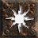

 Discharge 15.79% (18.0)
Popular builds include:
42% of all Sorcs favor Lightning
42% of all Sorcs favor Cold
14% of all Sorcs favor Fire
More detailed breakdown:
19.00% of Sorceress's invest heavily in Teleport, Telekinesis, Lightning Mastery, Thunder Storm, Lightning Surge
18.50% of Sorceress's invest heavily in Freezing Pulse, Glacial Spike, Cold Mastery, Ice Blast, Ice Bolt
14.50% of Sorceress's invest heavily in Lightning Surge, Lightning Mastery, Chain Lightning, Charged Bolt, Warmth
12.50% of Sorceress's invest heavily in Frozen Orb, Hydra, Cold Mastery, Fire Mastery, Fire Ball
7.00% of Sorceress's invest heavily in Lightning Mastery, Nova, Discharge, Telekinesis, Static Field
5.50% of Sorceress's invest heavily in Blizzard, Cold Mastery, Glacial Spike, Ice Blast, Hydra
5.50% of Sorceress's invest heavily in Shiver Armor, Frost Nova, Cold Mastery, Ice Blast, Warmth
5.00% of Sorceress's invest heavily in Frigerate, Enflame, Shiver Armor, Warmth, Cold Mastery
4.50% of Sorceress's invest heavily in Fire Mastery, Hydra, Warmth, Telekinesis, Fire Ball
2.50% of Sorceress's invest heavily in Nova, Discharge, Lightning Mastery, Warmth, Teleport
2.00% of Sorceress's invest heavily in Fire Mastery, Lightning Mastery, Hydra, Fire Ball, Charged Bolt
1.50% of Sorceress's invest heavily in Fire Bolt, Fire Ball, Fire Mastery, Meteor, Hydra
1.00% of Sorceress's invest heavily in Fire Mastery, Hydra, Frozen Orb, Cold Mastery, Shiver Armor
1.00% of Sorceress's invest heavily in Warmth, Fire Mastery, Telekinesis, Inferno, Immolate
Skills: Telekinesis:20, Teleport:20, Lightning Mastery:20, Thunder Storm:20, Lightning Surge:18, Energy Shield:6, Warmth:1, Fire Mastery:1, Charged Bolt:1, Chain Lightning:1
Equipment:
Gloves: Magefist, amulet: Mara's Kaleidoscope, Belt: Arachnid Mesh, ring: The Stone of Jordan x2, Armor: Skin of the Vipermagi, Helmet: Harlequin Crest, Boots: Sandstorm Trek, Left hand: Memory, Left hand: Ondal's Wisdom
Mercenary: Act 2 Desert Mercenary - Fortitude, Vampire Gaze, Infinity
Skills: Telekinesis:20, Lightning Surge:20, Teleport:20, Thunder Storm:20, Lightning Mastery:10, Hydra:9, Fire Bolt:1, Warmth:1, Fire Ball:1, Enflame:1, Fire Mastery:1, Charged Bolt:1, Chain Lightning:1, Energy Shield:1
Equipment:
Armor: Skin of the Vipermagi, Belt: Arachnid Mesh, ring: The Stone of Jordan x2, Gloves: Dracul's Grasp, amulet: Tal Rasha's Adjudication, Helmet: Griffon's Eye, Boots: Silkweave, Left hand: War Staff of Burning, Left hand: Warpspear
Mercenary: Act 2 Desert Mercenary - Treachery, Steel Shade, Infinity
Skills: Telekinesis:20, Lightning Surge:20, Teleport:20, Lightning Mastery:20, Thunder Storm:20, Energy Shield:3, Warmth:1, Charged Bolt:1, Static Field:1, Chain Lightning:1
Equipment:
ring: Nature's Peace, Boots: Gale Trample, Belt: Tal Rasha's Fine-Spun Cloth, Armor: Treachery, amulet: Tal Rasha's Adjudication, Gloves: Trang-Oul's Claws, Helmet: Rockstopper, Left hand: Spirit, Left hand: Warpspear, Offhand: The Oculus
Mercenary: Act 2 Desert Mercenary - No equipment
Skills: Telekinesis:20, Lightning Surge:20, Teleport:20, Lightning Mastery:20, Thunder Storm:20, Warmth:1, Fire Mastery:1, Charged Bolt:1, Static Field:1, Chain Lightning:1, Energy Shield:1
Equipment:
amulet: Mara's Kaleidoscope, ring: The Stone of Jordan x2, Boots: Sandstorm Trek, Helmet: Harlequin Crest, Gloves: Frostburn, Belt: Arachnid Mesh, Armor: Skin of the Vipermagi, Left hand: Plague, Left hand: Ondal's Wisdom, Offhand: Lidless Wall
Mercenary: Act 2 Desert Mercenary - Steel Shade, Treachery, Infinity
Skills: Telekinesis:20, Teleport:20, Lightning Mastery:20, Thunder Storm:20, Nova:12, Energy Shield:8, Warmth:1, Charged Bolt:1, Static Field:1, Lightning Surge:1, Chain Lightning:1, Discharge:1
Equipment:
Boots: Silkweave, Belt: Arachnid Mesh, amulet: Mara's Kaleidoscope, Gloves: Magefist, Armor: Skin of the Vipermagi, ring: The Stone of Jordan x2, Helmet: Griffon's Eye, Left hand: Memory, Left hand: Warpspear
Mercenary: Act 2 Desert Mercenary - Fortitude, Vampire Gaze, Infinity
Skills: Telekinesis:20, Teleport:20, Lightning Mastery:20, Thunder Storm:20, Lightning Surge:15, Energy Shield:8, Warmth:1, Charged Bolt:1, Chain Lightning:1
Equipment:
amulet: Skull Collar, Helmet: Griffon's Eye, Belt: Arachnid Mesh, Gloves: Magefist, ring: The Stone of Jordan x2, Armor: Enigma, Boots: Silkweave, Left hand: Memory, Left hand: Wizardspike, Offhand: Stormshield
Mercenary: Act 2 Desert Mercenary - No equipment
Skills: Telekinesis:20, Teleport:20, Lightning Mastery:20, Thunder Storm:20, Lightning Surge:12, Energy Shield:8, Warmth:1, Charged Bolt:1, Static Field:1, Nova:1, Chain Lightning:1, Discharge:1
Equipment:
ring: Shadow Whorl, ring: Bul-Kathos' Wedding Band, Gloves: Magefist, Armor: Skin of the Vipermagi, Boots: Silkweave, Belt: Arachnid Mesh, Helmet: Griffon's Eye, amulet: Mara's Kaleidoscope, Left hand: Memory, Left hand: Ondal's Wisdom
Mercenary: Act 2 Desert Mercenary - Shaftstop, Steel Shade, Infinity
Skills: Telekinesis:20, Lightning Surge:20, Teleport:20, Lightning Mastery:20, Thunder Storm:20, Warmth:1, Charged Bolt:1, Chain Lightning:1, Energy Shield:1
Equipment:
Helmet: Harlequin Crest, amulet: Mara's Kaleidoscope, ring: Raven Touch, ring: Entropy Band, Gloves: Frostburn, Belt: Arachnid Mesh, Armor: Skin of the Vipermagi, Boots: Infernostride, Left hand: Grim Wand of Lower Resistance, Left hand: Warpspear
Mercenary: Act 2 Desert Mercenary - Fortitude, Tal Rasha's Horadric Crest, Insight
Skills: Telekinesis:20, Lightning Surge:20, Teleport:20, Lightning Mastery:20, Thunder Storm:20, Warmth:1, Charged Bolt:1, Chain Lightning:1, Energy Shield:1
Equipment:
Helmet: Griffon's Eye, amulet: Tal Rasha's Adjudication, Armor: Tal Rasha's Guardianship, Belt: Tal Rasha's Fine-Spun Cloth, Boots: PlagueRI Trample, ring: Order Eye, ring: Nature's Peace, Gloves: Trang-Oul's Claws, Left hand: Sapphire Bone Wand of Lower Resistance, Left hand: Warpspear, Offhand: Wall of the Eyeless
Mercenary: Act 2 Desert Mercenary - Steel Shade, Fortitude, Infinity
Skills: Telekinesis:20, Lightning Surge:20, Teleport:20, Lightning Mastery:20, Thunder Storm:20, Chain Lightning:2, Warmth:1, Charged Bolt:1, Energy Shield:1
Equipment:
Belt: Arachnid Mesh, Boots: Infernostride, Gloves: Magefist, ring: PlagueRI Gyre, ring: Doom Circle, Helmet: Griffon's Eye, amulet: Beast Beads, Armor: Skin of the Vipermagi, Left hand: Grim Wand of Lower Resistance, Left hand: Warpspear, Offhand: Spirit
Mercenary: Act 2 Desert Mercenary - Veil of Steel, Treachery, Insight
Skills: Telekinesis:20, Teleport:20, Lightning Mastery:20, Thunder Storm:20, Lightning Surge:6, Energy Shield:6, Warmth:1, Charged Bolt:1, Chain Lightning:1, Ice Bolt:1, Frigerate:1, Ice Blast:1, Shiver Armor:1
Equipment:
amulet: Bone Scarab, ring: Dwarf Star, ring: The Stone of Jordan, Helmet: Harlequin Crest, Belt: Verdungo's Hearty Cord, Boots: War Traveler, Gloves: Dracul's Grasp, Armor: Skin of the Vipermagi, Left hand: Grim Wand of Lower Resistance, Left hand: Knell Striker, Offhand: Spirit x2
Mercenary: Act 2 Desert Mercenary - Steel Shade, Treachery, Infinity
Skills: Telekinesis:20, Lightning Surge:20, Teleport:20, Lightning Mastery:20, Thunder Storm:20, Warmth:1, Charged Bolt:1, Chain Lightning:1, Energy Shield:1
Equipment:
Boots: Silkweave, Belt: Arachnid Mesh, Helmet: Harlequin Crest, ring: The Stone of Jordan, ring: Manald Heal, Armor: Skin of the Vipermagi, Gloves: Dracul's Grasp, amulet: Corruption Gorget, Left hand: Call to Arms, Left hand: Warpspear, Offhand: Lidless Wall
Mercenary: Act 2 Desert Mercenary - Treachery, Steel Shade, Infinity
Skills: Telekinesis:20, Teleport:20, Lightning Mastery:20, Thunder Storm:20, Energy Shield:11, Lightning Surge:10, Warmth:2, Charged Bolt:1, Chain Lightning:1
Equipment:
Gloves: Magefist, Helmet: Griffon's Eye, ring: Bone Band
Mercenary: Act 2 Desert Mercenary - No equipment
Skills: Charged Bolt:20, Lightning Surge:20, Teleport:20, Lightning Mastery:20, Thunder Storm:20, Warmth:1, Static Field:1, Telekinesis:1, Chain Lightning:1, Energy Shield:1
Equipment:
Belt: Arachnid Mesh, amulet: Mara's Kaleidoscope, Gloves: Magefist, Helmet: Harlequin Crest, Boots: Carrion Nails, Armor: Skin of the Vipermagi, ring: The Stone of Jordan x2, Left hand: Call to Arms, Left hand: Warpspear, Offhand: Lidless Wall
Mercenary: Act 2 Desert Mercenary - Giant Skull, Leviathan, Infinity
Skills: Warmth:20, Telekinesis:20, Teleport:20, Energy Shield:20, Lightning Mastery:20, Charged Bolt:1, Static Field:1, Lightning Surge:1, Chain Lightning:1
Equipment:
Belt: Arachnid Mesh, Gloves: Magefist, amulet: Mara's Kaleidoscope, Armor: Que-Hegan's Wisdom, Helmet: Harlequin Crest, ring: Viper Hold, ring: The Stone of Jordan, Boots: Silkweave, Left hand: Memory, Left hand: Ondal's Wisdom
Mercenary: Act 2 Desert Mercenary - Duriel's Shell, Tal Rasha's Horadric Crest, Infinity
Skills: Telekinesis:20, Lightning Surge:20, Teleport:20, Lightning Mastery:20, Thunder Storm:20, Warmth:1, Charged Bolt:1, Chain Lightning:1, Energy Shield:1
Equipment:
ring: Raven Frost, ring: The Stone of Jordan, Boots: War Traveler, amulet: Mara's Kaleidoscope, Helmet: Harlequin Crest, Left hand: Glowing Grave Wand of Lower Resistance, Left hand: Warpspear, Gloves: Frostburn, Belt: Arachnid Mesh, Armor: Enigma
Mercenary: Act 2 Desert Mercenary - Vampire Gaze, Fortitude, Infinity
Skills: Nova:20, Teleport:20, Lightning Mastery:20, Thunder Storm:20, Telekinesis:19, Charged Bolt:1, Static Field:1, Lightning Surge:1, Chain Lightning:1, Energy Shield:1
Equipment:
Mercenary: Act 2 Desert Mercenary - No equipment
Skills: Telekinesis:20, Lightning Surge:20, Teleport:20, Lightning Mastery:20, Thunder Storm:20, Warmth:1, Charged Bolt:1, Chain Lightning:1, Energy Shield:1
Equipment:
Boots: Silkweave, ring: The Stone of Jordan, ring: Nature's Peace, amulet: Raven Emblem, Armor: Chains of Honor, Helmet: Harlequin Crest, Belt: Verdungo's Hearty Cord, Gloves: Frostburn, Left hand: Memory, Left hand: Warpspear
Mercenary: Act 2 Desert Mercenary - Treachery, Vampire Gaze, Infinity
Skills: Telekinesis:20, Teleport:20, Lightning Mastery:20, Thunder Storm:20, Lightning Surge:19, Warmth:1, Charged Bolt:1, Static Field:1, Chain Lightning:1, Energy Shield:1
Equipment:
Armor: Enigma, Helmet: Griffon's Eye, ring: PlagueRI Knot, ring: The Stone of Jordan, amulet: Mara's Kaleidoscope, Boots: Silkweave, Belt: Arachnid Mesh, Gloves: Immortal King's Forge, Left hand: Call to Arms, Left hand: Ondal's Wisdom, Offhand: Spirit
Mercenary: Act 2 Desert Mercenary - Andariel's Visage, Fortitude, Infinity
Skills: Telekinesis:20, Lightning Surge:20, Teleport:20, Lightning Mastery:20, Thunder Storm:20, Warmth:1, Charged Bolt:1, Chain Lightning:1, Energy Shield:1
Equipment:
Boots: Storm Shank, Gloves: Magefist, Helmet: Harlequin Crest, amulet: Mara's Kaleidoscope, Belt: Arachnid Mesh, ring: Bul-Kathos' Wedding Band, ring: Wisp Projector, Armor: Skin of the Vipermagi, Left hand: Death's Fathom, Left hand: Warpspear, Offhand: Spirit
Mercenary: Act 2 Desert Mercenary - Fortitude, Steel Shade, Infinity
Skills: Telekinesis:20, Teleport:20, Lightning Mastery:20, Thunder Storm:20, Discharge:13, Warmth:1, Charged Bolt:1, Static Field:1, Nova:1, Lightning Surge:1, Chain Lightning:1, Energy Shield:1, Ice Bolt:1, Frigerate:1, Ice Blast:1, Shiver Armor:1
Equipment:
Helmet: Griffon's Eye, Armor: Tal Rasha's Guardianship, amulet: Tal Rasha's Adjudication, Belt: Tal Rasha's Fine-Spun Cloth, Left hand: Ondal's Wisdom
Mercenary: Act 2 Desert Mercenary - No equipment
Skills: Telekinesis:20, Lightning Surge:20, Teleport:20, Lightning Mastery:20, Thunder Storm:20, Warmth:1, Charged Bolt:1, Chain Lightning:1, Energy Shield:1
Equipment:
Gloves: Magefist, ring: Bone Turn, ring: Raven Frost, Belt: Arachnid Mesh, Boots: Silkweave, Helmet: Harlequin Crest, Left hand: Call to Arms, Left hand: Warpspear, Offhand: Medusa's Gaze, Armor: Chains of Honor, amulet: Tal Rasha's Adjudication
Mercenary: Act 2 Desert Mercenary - Treachery, Vampire Gaze, Infinity
Skills: Telekinesis:20, Teleport:20, Lightning Mastery:20, Thunder Storm:20, Lightning Surge:11, Energy Shield:9, Warmth:1, Charged Bolt:1, Chain Lightning:1
Equipment:
Belt: Arachnid Mesh, ring: The Stone of Jordan, ring: Bul-Kathos' Wedding Band, Armor: Skin of the Vipermagi, Boots: Silkweave, amulet: Tal Rasha's Adjudication, Helmet: Harlequin Crest, Gloves: Magefist, Left hand: Memory, Left hand: Ondal's Wisdom
Mercenary: Act 2 Desert Mercenary - No equipment
Skills: Telekinesis:20, Teleport:20, Lightning Mastery:20, Energy Shield:18, Thunder Storm:14, Warmth:1, Charged Bolt:1, Static Field:1, Nova:1, Lightning Surge:1, Chain Lightning:1, Discharge:1, Ice Bolt:1, Frigerate:1, Ice Blast:1, Shiver Armor:1
Equipment:
Mercenary: Act 2 Desert Mercenary - No equipment
Skills: Telekinesis:20, Teleport:20, Lightning Mastery:20, Thunder Storm:20, Energy Shield:12, Warmth:1, Charged Bolt:1, Static Field:1, Nova:1, Lightning Surge:1, Chain Lightning:1, Discharge:1, Ice Bolt:1, Frigerate:1, Ice Blast:1, Shiver Armor:1
Equipment:
Gloves: Magefist, Belt: Arachnid Mesh, ring: The Stone of Jordan x2, Armor: Skin of the Vipermagi, Left hand: Flail, Left hand: Ondal's Wisdom, Offhand: Phoenix, amulet: Mara's Kaleidoscope, Boots: Silkweave, Helmet: Storm Brow
Mercenary: Act 2 Desert Mercenary - Guardian Angel, Tal Rasha's Horadric Crest, Infinity
Skills: Telekinesis:20, Teleport:20, Lightning Mastery:20, Thunder Storm:20, Energy Shield:10, Nova:8, Charged Bolt:1, Static Field:1, Lightning Surge:1, Chain Lightning:1, Discharge:1
Equipment:
Armor: Skin of the Vipermagi, ring: The Stone of Jordan, ring: Blood Turn, Boots: War Traveler, Belt: Arachnid Mesh, Gloves: Magefist, Helmet: Griffon's Eye, amulet: Mara's Kaleidoscope, Left hand: Memory, Left hand: Warpspear
Mercenary: Act 2 Desert Mercenary - Shaftstop, Kira's Guardian, Infinity
Skills: Telekinesis:20, Lightning Surge:20, Teleport:20, Thunder Storm:20, Lightning Mastery:19, Warmth:1, Charged Bolt:1, Chain Lightning:1, Energy Shield:1
Equipment:
Gloves: Frostburn, ring: Raven Frost, ring: Manald Heal, Armor: Skin of the Vipermagi, Boots: Bitter Shank, Helmet: Griffon's Eye, Belt: Arachnid Mesh, amulet: Mara's Kaleidoscope, Left hand: Tal Rasha's Lidless Eye, Left hand: Warpspear, Offhand: Spirit
Mercenary: Act 2 Desert Mercenary - Leviathan, Tal Rasha's Horadric Crest, Infinity
Skills: Telekinesis:20, Teleport:20, Lightning Mastery:20, Thunder Storm:20, Lightning Surge:10, Energy Shield:10, Warmth:1, Charged Bolt:1, Chain Lightning:1
Equipment:
Helmet: Harlequin Crest, ring: Havoc Eye, ring: Bul-Kathos' Wedding Band, amulet: PlagueRI Torc, Armor: Skin of the Vipermagi, Belt: Arachnid Mesh, Boots: Silkweave, Gloves: Magefist, Left hand: Memory, Left hand: Warpspear
Mercenary: Act 2 Desert Mercenary - Crown of Ages, Shaftstop, Infinity
Skills: Telekinesis:20, Energy Shield:20, Lightning Mastery:20, Thunder Storm:20, Lightning Surge:11, Teleport:9, Warmth:1, Charged Bolt:1, Chain Lightning:1
Equipment:
amulet: Mara's Kaleidoscope, Armor: Enigma, Belt: Arachnid Mesh, ring: Nagelring, ring: Chaos Grasp, Gloves: Chance Guards, Helmet: Harlequin Crest, Boots: Silkweave, Left hand: Harmony, Left hand: Ondal's Wisdom, Offhand: FrostbiteB
Mercenary: Act 2 Desert Mercenary - Steel Shade, Treachery, Infinity
Skills: Telekinesis:20, Teleport:20, Lightning Mastery:20, Thunder Storm:20, Lightning Surge:16, Energy Shield:3, Warmth:1, Charged Bolt:1, Chain Lightning:1, Frigerate:1
Equipment:
Belt: Tal Rasha's Fine-Spun Cloth, ring: Beast Loop, ring: Dread Turn, Armor: Tal Rasha's Guardianship, Boots: War Traveler, amulet: Tal Rasha's Adjudication, Helmet: Harlequin Crest, Gloves: Magefist, Left hand: Warpspear, Left hand: Ondal's Wisdom
Mercenary: Act 2 Desert Mercenary - Guardian Angel, Tal Rasha's Horadric Crest, Infinity
Skills: Telekinesis:20, Lightning Surge:20, Teleport:20, Thunder Storm:20, Lightning Mastery:12, Fire Bolt:1, Warmth:1, Fire Ball:1, Enflame:1, Fire Mastery:1, Hydra:1, Charged Bolt:1, Static Field:1, Chain Lightning:1, Energy Shield:1
Equipment:
Belt: Arachnid Mesh, amulet: Mara's Kaleidoscope, Helmet: Griffon's Eye, Boots: Sandstorm Trek, Gloves: Magefist, Armor: Skin of the Vipermagi, ring: Grim Circle, ring: Havoc Whorl, Left hand: Smoked Sphere, Left hand: Warpspear, Offhand: Lidless Wall
Mercenary: Act 2 Desert Mercenary - Andariel's Visage, Fortitude, Infinity
Skills: Telekinesis:20, Teleport:20, Lightning Mastery:20, Thunder Storm:20, Energy Shield:14, Lightning Surge:3, Warmth:1, Charged Bolt:1, Static Field:1, Chain Lightning:1
Equipment:
ring: Dread Loop, ring: Raven Circle, Boots: Silkweave, amulet: Mara's Kaleidoscope, Gloves: Dracul's Grasp, Armor: Que-Hegan's Wisdom, Helmet: Harlequin Crest, Belt: Arachnid Mesh, Offhand: Memory, Offhand: Ondal's Wisdom
Mercenary: Act 2 Desert Mercenary - Steel Shade, Treachery, Insight
Skills: Telekinesis:20, Teleport:20, Lightning Mastery:20, Thunder Storm:20, Lightning Surge:14, Energy Shield:5, Warmth:1, Charged Bolt:1, Chain Lightning:1
Equipment:
Gloves: Magefist, ring: Bul-Kathos' Wedding Band, ring: Dread Knot, Armor: Skin of the Vipermagi, Belt: Arachnid Mesh, Boots: Silkweave, amulet: Powered Amulet, Helmet: Harlequin Crest, Left hand: Memory, Left hand: Ondal's Wisdom
Mercenary: Act 2 Desert Mercenary - Tal Rasha's Horadric Crest, Leviathan, Infinity
Skills: Telekinesis:20, Teleport:20, Lightning Mastery:20, Thunder Storm:20, Lightning Surge:13, Warmth:2, Charged Bolt:1, Chain Lightning:1, Energy Shield:1, Ice Bolt:1, Frigerate:1, Ice Blast:1, Shiver Armor:1
Equipment:
Helmet: Harlequin Crest, Belt: Arachnid Mesh, Gloves: Frostburn, amulet: Mara's Kaleidoscope, ring: Bone Hold, ring: Rune Loop, Boots: War Traveler, Armor: Skin of the Vipermagi, Offhand: Ondal's Wisdom, Left hand: Warpspear
Mercenary: Act 2 Desert Mercenary - Steel Shade, Duriel's Shell, Infinity
Skills: Telekinesis:20, Teleport:20, Lightning Mastery:20, Thunder Storm:20, Energy Shield:13, Lightning Surge:5, Warmth:1, Charged Bolt:1, Chain Lightning:1
Equipment:
amulet: Powered Amulet of the Colossus, Boots: Silkweave, Gloves: Frostburn, ring: Raven Grip, ring: Shadow Hold, Helmet: Griffon's Eye, Armor: Skin of the Vipermagi, Left hand: Memory, Left hand: Ondal's Wisdom
Mercenary: Act 2 Desert Mercenary - No equipment
Skills: Telekinesis:20, Teleport:20, Lightning Mastery:20, Thunder Storm:20, Lightning Surge:9, Energy Shield:9, Warmth:1, Charged Bolt:1, Chain Lightning:1
Equipment:
ring: Eagle Band, ring: Bul-Kathos' Wedding Band, Armor: Skin of the Vipermagi, Gloves: Frostburn, Belt: Arachnid Mesh, Helmet: Harlequin Crest, amulet: Mara's Kaleidoscope, Boots: PlagueRI Track, Left hand: Ondal's Wisdom, Left hand: Warpspear
Mercenary: Act 2 Desert Mercenary - Treachery, Steel Shade, Infinity
Skills: Hydra:20, Telekinesis:20, Teleport:20, Lightning Mastery:20, Thunder Storm:11, Fire Bolt:1, Warmth:1, Fire Ball:1, Enflame:1, Fire Mastery:1, Charged Bolt:1, Static Field:1, Lightning Surge:1, Chain Lightning:1, Energy Shield:1
Equipment:
Helmet: Harlequin Crest, Belt: Arachnid Mesh, amulet: Mara's Kaleidoscope, ring: Stone Circle, ring: Bul-Kathos' Wedding Band, Armor: Que-Hegan's Wisdom, Gloves: Dracul's Grasp, Boots: Silkweave, Left hand: Memory, Left hand: Ondal's Wisdom
Mercenary: Act 2 Desert Mercenary - Fortitude, Vampire Gaze, Infinity
Skills: Telekinesis:20, Lightning Surge:20, Teleport:20, Thunder Storm:20, Lightning Mastery:17, Warmth:1, Charged Bolt:1, Chain Lightning:1, Energy Shield:1
Equipment:
Gloves: Magefist, Belt: Arachnid Mesh, Armor: Skin of the Vipermagi, ring: Wraithra Turn, Left hand: Griswold's Edge, Left hand: Warpspear, Offhand: Medusa's Gaze
Mercenary: Act 2 Desert Mercenary - No equipment
Skills: Ice Bolt:20, Ice Blast:20, Glacial Spike:20, Cold Mastery:20, Freezing Pulse:20, Warmth:5, Telekinesis:1, Teleport:1, Frigerate:1, Shiver Armor:1
Equipment:
amulet: Glacial Amulet of Performance, Belt: Arachnid Mesh, ring: The Stone of Jordan x2, Boots: Aldur's Advance, Gloves: Dracul's Grasp, Helmet: Harlequin Crest, Armor: Skin of the Vipermagi, Left hand: Call to Arms, Left hand: Death's Fathom, Offhand: Lidless Wall, Offhand: Spirit
Mercenary: Act 2 Desert Mercenary - Treachery, Steel Shade, Infinity
Skills: Ice Bolt:20, Ice Blast:20, Glacial Spike:20, Cold Mastery:20, Freezing Pulse:20, Warmth:2, Shiver Armor:2, Telekinesis:1, Teleport:1, Frigerate:1
Equipment:
ring: Shadow Grip, ring: Wisp Projector, Gloves: Trang-Oul's Claws, Armor: Tal Rasha's Guardianship, amulet: Mara's Kaleidoscope, Helmet: Nightwing's Veil, Boots: War Traveler, Left hand: Call to Arms, Left hand: Death's Fathom, Offhand: Spirit, Offhand: Stormshield, Belt: Arachnid Mesh
Mercenary: Act 2 Desert Mercenary - Treachery, Vampire Gaze, Infinity
Skills: Ice Bolt:20, Ice Blast:20, Glacial Spike:20, Cold Mastery:20, Freezing Pulse:20, Warmth:1, Telekinesis:1, Teleport:1
Equipment:
amulet: Mara's Kaleidoscope, ring: The Stone of Jordan, ring: Dread Eye, Helmet: Harlequin Crest, Boots: War Traveler, Gloves: Magefist, Belt: Verdungo's Hearty Cord, Armor: Tal Rasha's Guardianship, Left hand: Call to Arms, Left hand: Heart of the Oak, Offhand: Medusa's Gaze, Offhand: Spirit
Mercenary: Act 2 Desert Mercenary - Treachery, Tal Rasha's Horadric Crest, Infinity
Skills: Ice Bolt:20, Ice Blast:20, Glacial Spike:20, Cold Mastery:20, Freezing Pulse:20, Warmth:1, Telekinesis:1, Teleport:1, Frigerate:1, Shiver Armor:1, Chilling Armor:1
Equipment:
Armor: Skin of the Vipermagi, Boots: Sandstorm Trek, amulet: Glacial Amulet, Helmet: Harlequin Crest, Gloves: Trang-Oul's Claws, ring: Wisp Projector, Belt: Arachnid Mesh, Offhand: Spirit, Offhand: Phoenix, Left hand: Heart of the Oak
Mercenary: Act 2 Desert Mercenary - Vampire Gaze, Insight
Skills: Ice Blast:20, Glacial Spike:20, Cold Mastery:20, Freezing Pulse:20, Ice Bolt:8, Hydra:7, Fire Bolt:1, Warmth:1, Fire Ball:1, Enflame:1, Fire Mastery:1, Telekinesis:1, Teleport:1, Lightning Mastery:1, Frigerate:1, Shiver Armor:1
Equipment:
Gloves: Magefist, ring: Nature's Peace, ring: Great Wyrm's Ring of the Apprentice, Boots: Silkweave, Helmet: Tal Rasha's Horadric Crest, Armor: Tal Rasha's Guardianship, amulet: Tal Rasha's Adjudication, Belt: Tal Rasha's Fine-Spun Cloth, Left hand: Tal Rasha's Lidless Eye, Left hand: Edge, Offhand: Spirit
Mercenary: Act 2 Desert Mercenary - Andariel's Visage, Shaftstop, Insight
Skills: Ice Blast:20, Glacial Spike:20, Cold Mastery:20, Freezing Pulse:20, Nova:13, Warmth:3, Static Field:1, Telekinesis:1, Teleport:1, Ice Bolt:1, Frigerate:1, Frost Nova:1, Shiver Armor:1
Equipment:
Gloves: Magefist, Armor: Tal Rasha's Guardianship, Boots: Rune Blazer, Helmet: Tal Rasha's Horadric Crest, amulet: Tal Rasha's Adjudication, ring: Bone Whorl, ring: Nature's Peace, Belt: Tal Rasha's Fine-Spun Cloth, Left hand: Victorious Bone Wand of Lower Resistance, Left hand: Tal Rasha's Lidless Eye, Offhand: Lidless Wall, Offhand: Spirit
Mercenary: Act 2 Desert Mercenary - Guardian Angel, Tal Rasha's Horadric Crest, Insight
Skills: Ice Blast:20, Glacial Spike:20, Cold Mastery:20, Freezing Pulse:20, Ice Bolt:18, Warmth:1, Telekinesis:1, Teleport:1, Lightning Mastery:1, Frigerate:1, Shiver Armor:1
Equipment:
Armor: Tal Rasha's Guardianship, Gloves: Magefist, ring: Bul-Kathos' Wedding Band, ring: The Stone of Jordan, Belt: Tal Rasha's Fine-Spun Cloth, Boots: War Traveler, Helmet: Tal Rasha's Horadric Crest, amulet: Tal Rasha's Adjudication, Left hand: Ondal's Wisdom, Left hand: Tal Rasha's Lidless Eye, Offhand: Spirit
Mercenary: Act 2 Desert Mercenary - Steel Shade, The Gladiator's Bane, Insight
Skills: Glacial Spike:20, Cold Mastery:20, Freezing Pulse:20, Fire Mastery:12, Hydra:12, Ice Blast:4, Ice Bolt:3, Fire Bolt:1, Warmth:1, Fire Ball:1, Enflame:1, Static Field:1, Telekinesis:1, Teleport:1, Frigerate:1, Frost Nova:1, Shiver Armor:1, Blizzard:1, Chilling Armor:1
Equipment:
Gloves: Magefist, ring: Skull Master, ring: Havoc Touch, Boots: War Traveler, Helmet: Tal Rasha's Horadric Crest, Armor: Tal Rasha's Guardianship, Belt: Tal Rasha's Fine-Spun Cloth, amulet: Tal Rasha's Adjudication, Left hand: Call to Arms, Left hand: Tal Rasha's Lidless Eye, Offhand: Spirit, Offhand: Phoenix
Mercenary: Act 2 Desert Mercenary - Fortitude, Tal Rasha's Horadric Crest, Infinity
Skills: Ice Bolt:20, Ice Blast:20, Glacial Spike:20, Cold Mastery:20, Freezing Pulse:20, Warmth:1, Static Field:1, Telekinesis:1, Teleport:1
Equipment:
Belt: Arachnid Mesh, Helmet: Nightwing's Veil, ring: Wisp Projector, ring: Scintillating Ring of the Apprentice, amulet: Shadow Gorget, Boots: Aldur's Advance, Gloves: Dracul's Grasp, Armor: Chains of Honor, Left hand: Call to Arms, Left hand: Heart of the Oak, Offhand: Spirit x2
Mercenary: Act 2 Desert Mercenary - Shaftstop, Steel Shade, Insight
Skills: Hydra:20, Glacial Spike:20, Cold Mastery:20, Freezing Pulse:20, Fire Mastery:12, Ice Blast:4, Fire Bolt:1, Warmth:1, Fire Ball:1, Enflame:1, Telekinesis:1, Teleport:1, Ice Bolt:1
Equipment:
Gloves: Magefist, amulet: Mara's Kaleidoscope, ring: The Stone of Jordan x2, Belt: Arachnid Mesh, Helmet: Harlequin Crest, Armor: Skin of the Vipermagi, Boots: War Traveler, Left hand: Call to Arms, Left hand: Heart of the Oak, Offhand: Spirit, Offhand: Phoenix
Mercenary: Act 2 Desert Mercenary - Shaftstop, Steel Shade, Infinity
Skills: Ice Bolt:20, Ice Blast:20, Cold Mastery:20, Freezing Pulse:20, Glacial Spike:14, Warmth:1, Charged Bolt:1, Static Field:1, Telekinesis:1, Lightning Surge:1, Teleport:1, Chain Lightning:1, Energy Shield:1, Frigerate:1, Shiver Armor:1
Equipment:
ring: Nagelring x2, Gloves: Chance Guards, Belt: Goldwrap, Left hand: Call to Arms, Left hand: The Oculus, Offhand: Spirit x2, Helmet: Harlequin Crest, Armor: Tal Rasha's Guardianship, Boots: Sandstorm Trek
Mercenary: Act 2 Desert Mercenary - No equipment
Skills: Ice Blast:20, Glacial Spike:20, Cold Mastery:20, Freezing Pulse:20, Ice Bolt:18, Warmth:1, Static Field:1, Telekinesis:1, Teleport:1, Frigerate:1, Shiver Armor:1
Equipment:
Armor: Enigma, Gloves: Trang-Oul's Claws, Helmet: Harlequin Crest, Boots: War Traveler, Belt: Thundergod's Vigor, Offhand: Spirit
Mercenary: Act 2 Desert Mercenary - Tomb Reaver
Skills: Ice Bolt:20, Ice Blast:20, Glacial Spike:20, Cold Mastery:20, Freezing Pulse:20, Warmth:1, Static Field:1, Telekinesis:1, Teleport:1
Equipment:
amulet: Tal Rasha's Adjudication, Gloves: Trang-Oul's Claws, Helmet: Harlequin Crest, Boots: Silkweave, Armor: Tal Rasha's Guardianship, Belt: Tal Rasha's Fine-Spun Cloth, ring: The Stone of Jordan x2, Left hand: Heart of the Oak, Offhand: Spirit
Mercenary: Act 2 Desert Mercenary - Fortitude, Steel Shade, Infinity
Skills: Telekinesis:20, Glacial Spike:20, Cold Mastery:20, Freezing Pulse:20, Ice Blast:6, Energy Shield:3, Fire Bolt:1, Warmth:1, Fire Ball:1, Enflame:1, Fire Mastery:1, Hydra:1, Charged Bolt:1, Static Field:1, Lightning Surge:1, Teleport:1, Chain Lightning:1, Ice Bolt:1, Frigerate:1, Shiver Armor:1
Equipment:
Helmet: Harlequin Crest, amulet: Tal Rasha's Adjudication, ring: PlagueRI Coil, ring: Wraithra Master, Gloves: Magefist, Armor: Enigma, Belt: Arachnid Mesh, Boots: Silkweave, Left hand: Memory, Left hand: Death's Fathom, Offhand: Spirit
Mercenary: Act 2 Desert Mercenary - Guardian Angel, Vampire Gaze, Insight
Skills: Ice Blast:20, Glacial Spike:20, Cold Mastery:20, Freezing Pulse:20, Ice Bolt:17, Warmth:1, Static Field:1, Telekinesis:1, Teleport:1, Frigerate:1, Shiver Armor:1
Equipment:
ring: Bone Coil
Mercenary: Act 2 Desert Mercenary - Treachery
Skills: Fire Ball:20, Glacial Spike:20, Cold Mastery:20, Freezing Pulse:20, Warmth:8, Fire Mastery:5, Fire Bolt:1, Charged Bolt:1, Static Field:1, Telekinesis:1, Teleport:1, Ice Bolt:1, Frigerate:1, Ice Blast:1, Shiver Armor:1, Chilling Armor:1
Equipment:
Armor: Skin of the Vipermagi, Gloves: Magefist, Boots: Natalya's Soul, amulet: Mara's Kaleidoscope, ring: The Stone of Jordan, ring: Bone Gyre, Belt: Arachnid Mesh, Helmet: Harlequin Crest, Left hand: Heart of the Oak, Offhand: Spirit
Mercenary: Act 2 Desert Mercenary - Fortitude, Giant Skull, Insight
Skills: Warmth:20, Glacial Spike:20, Cold Mastery:20, Freezing Pulse:20, Ice Blast:14, Teleport:5, Telekinesis:1, Ice Bolt:1, Frigerate:1, Shiver Armor:1
Equipment:
Gloves: Magefist, ring: Raven Frost, ring: Nagelring, amulet: Tal Rasha's Adjudication, Belt: Tal Rasha's Fine-Spun Cloth, Armor: Tal Rasha's Guardianship, Helmet: Harlequin Crest, Boots: War Traveler, Left hand: Edge, Left hand: The Oculus, Offhand: Moser's Blessed Circle
Mercenary: Act 2 Desert Mercenary - Tal Rasha's Horadric Crest, Fortitude, Infinity
Skills: Ice Blast:20, Glacial Spike:20, Cold Mastery:20, Freezing Pulse:20, Ice Bolt:19, Warmth:1, Static Field:1, Telekinesis:1, Teleport:1
Equipment:
Helmet: Harlequin Crest, Boots: Blood Stalker, Belt: Arachnid Mesh, ring: Wisp Projector, ring: Raven Frost, Armor: The Gladiator's Bane, amulet: Glacial Amulet of Life Everlasting, Gloves: Magefist, Left hand: Medusa's Gaze, Left hand: Heart of the Oak, Offhand: Spirit x2
Mercenary: Act 2 Desert Mercenary - Shaftstop, Tal Rasha's Horadric Crest, Insight
Skills: Ice Blast:20, Glacial Spike:20, Cold Mastery:20, Freezing Pulse:20, Ice Bolt:16, Warmth:1, Static Field:1, Telekinesis:1, Teleport:1, Lightning Mastery:1, Frigerate:1, Shiver Armor:1
Equipment:
ring: Beast Touch, ring: Order Turn, Armor: Tal Rasha's Guardianship, amulet: Chromatic Amulet of Fortune, Belt: Tal Rasha's Fine-Spun Cloth, Boots: Dread Track, Gloves: Magefist, Helmet: Tal Rasha's Horadric Crest, Left hand: Ondal's Wisdom, Left hand: Tal Rasha's Lidless Eye, Offhand: Spirit
Mercenary: Act 2 Desert Mercenary - Andariel's Visage, Duriel's Shell, Obedience
Skills: Ice Blast:20, Glacial Spike:20, Cold Mastery:20, Freezing Pulse:20, Ice Bolt:17, Warmth:1, Static Field:1, Telekinesis:1, Teleport:1, Frigerate:1, Shiver Armor:1
Equipment:
Gloves: Trang-Oul's Claws, ring: Shadow Grasp, ring: Beast Hold, Boots: Silkweave, Armor: Tal Rasha's Guardianship, amulet: Glacial Amulet of Precision, Left hand: The Oculus, Offhand: Spirit
Mercenary: Act 2 Desert Mercenary - Tal Rasha's Horadric Crest, Shaftstop, Insight
Skills: Ice Blast:20, Glacial Spike:20, Cold Mastery:20, Freezing Pulse:20, Nova:16, Warmth:2, Ice Bolt:2, Static Field:1, Telekinesis:1, Teleport:1
Equipment:
Gloves: Magefist, Boots: Silkweave, Belt: Tal Rasha's Fine-Spun Cloth, Armor: Tal Rasha's Guardianship, ring: Dwarf Star, ring: Bul-Kathos' Wedding Band, Helmet: Tal Rasha's Horadric Crest, amulet: Tal Rasha's Adjudication, Left hand: Call to Arms, Left hand: Tal Rasha's Lidless Eye, Offhand: Spirit x2
Mercenary: Act 2 Desert Mercenary - Fortitude, Andariel's Visage, Insight
Skills: Ice Blast:20, Glacial Spike:20, Cold Mastery:20, Freezing Pulse:20, Ice Bolt:16, Warmth:1, Telekinesis:1, Teleport:1, Frigerate:1, Shiver Armor:1
Equipment:
ring: Skull Whorl, ring: Bul-Kathos' Wedding Band, Gloves: Trang-Oul's Claws, Boots: War Traveler, Helmet: Harlequin Crest, Armor: Skin of the Vipermagi, amulet: Death Gorget, Belt: Arachnid Mesh, Left hand: Jared's Stone, Left hand: Heart of the Oak, Offhand: Spirit, Offhand: Phoenix
Mercenary: Act 2 Desert Mercenary - Tal Rasha's Horadric Crest, Shaftstop, Infinity
Skills: Ice Blast:20, Glacial Spike:20, Cold Mastery:20, Freezing Pulse:20, Ice Bolt:19, Warmth:1, Telekinesis:1, Teleport:1, Lightning Mastery:1
Equipment:
Gloves: Trang-Oul's Claws, ring: Order Grasp, ring: Rune Grasp, amulet: Raven Eye, Boots: Aldur's Advance, Left hand: Ondal's Wisdom, Left hand: The Oculus, Belt: Goldwrap, Helmet: Fiendra Brow, Armor: Enigma, Offhand: Spirit
Mercenary: Act 2 Desert Mercenary - Steel Shade, Shaftstop, Insight
Skills: Ice Blast:20, Glacial Spike:20, Cold Mastery:20, Freezing Pulse:20, Ice Bolt:13, Fire Bolt:1, Warmth:1, Fire Ball:1, Enflame:1, Fire Mastery:1, Hydra:1, Static Field:1, Telekinesis:1, Teleport:1, Frigerate:1
Equipment:
Boots: Skull Tread, Armor: Skin of the Vipermagi, ring: Bul-Kathos' Wedding Band, ring: Raven Frost, amulet: Telling of Beads, Helmet: Nightwing's Veil, Belt: Arachnid Mesh, Gloves: Magefist, Left hand: Spirit, Left hand: Edge, Offhand: Medusa's Gaze
Mercenary: Act 2 Desert Mercenary - Fortitude, Guillaume's Face, The Reaper's Toll
Skills: Ice Bolt:20, Ice Blast:20, Glacial Spike:20, Cold Mastery:20, Freezing Pulse:20, Warmth:1, Telekinesis:1, Teleport:1
Equipment:
amulet: Tal Rasha's Adjudication, ring: Manald Heal x2, Helmet: Harlequin Crest, Gloves: Dracul's Grasp, Boots: Silkweave, Belt: Arachnid Mesh, Armor: Skin of the Vipermagi, Left hand: Call to Arms, Left hand: Heart of the Oak, Offhand: Medusa's Gaze, Offhand: Stormshield
Mercenary: Act 2 Desert Mercenary - Treachery, Steel Shade, Insight
Skills: Ice Blast:20, Glacial Spike:20, Cold Mastery:20, Freezing Pulse:20, Ice Bolt:16, Warmth:1, Static Field:1, Telekinesis:1, Teleport:1, Frigerate:1, Shiver Armor:1
Equipment:
ring: Raven Spiral, ring: Nagelring, Gloves: Magefist, Belt: Tal Rasha's Fine-Spun Cloth, Boots: War Traveler, amulet: Tal Rasha's Adjudication, Helmet: Tal Rasha's Horadric Crest, Armor: Tal Rasha's Guardianship, Left hand: Jared's Stone, Left hand: Tal Rasha's Lidless Eye, Offhand: Ancients' Pledge, Offhand: Spirit
Mercenary: Act 2 Desert Mercenary - Andariel's Visage, Shaftstop, Insight
Skills: Ice Blast:20, Glacial Spike:20, Cold Mastery:20, Freezing Pulse:20, Ice Bolt:18, Warmth:1, Static Field:1, Telekinesis:1, Teleport:1
Equipment:
Boots: War Traveler, ring: Death Touch, ring: Wisp Projector, amulet: Tal Rasha's Adjudication, Helmet: Nightwing's Veil, Armor: Skin of the Vipermagi, Belt: Arachnid Mesh, Gloves: Dracul's Grasp, Left hand: Call to Arms, Left hand: Death's Fathom, Offhand: Medusa's Gaze, Offhand: Spirit
Mercenary: Act 2 Desert Mercenary - Tal Rasha's Horadric Crest, Smoke, Insight
Skills: Ice Blast:20, Glacial Spike:20, Cold Mastery:20, Freezing Pulse:20, Ice Bolt:17, Warmth:1, Telekinesis:1, Teleport:1, Frigerate:1, Shiver Armor:1
Equipment:
amulet: Tal Rasha's Adjudication, Belt: Tal Rasha's Fine-Spun Cloth, Boots: Silkweave, ring: The Stone of Jordan, ring: Beast Master, Helmet: Tal Rasha's Horadric Crest, Armor: Tal Rasha's Guardianship, Gloves: Dracul's Grasp, Left hand: Call to Arms, Left hand: Tal Rasha's Lidless Eye, Offhand: Spirit x2
Mercenary: Act 2 Desert Mercenary - Treachery, Steel Shade, Infinity
Skills: Ice Blast:20, Glacial Spike:20, Cold Mastery:20, Freezing Pulse:20, Ice Bolt:18, Warmth:1, Static Field:1, Telekinesis:1, Teleport:1
Equipment:
ring: Chaos Whorl, ring: Skull Circle, Gloves: Glyph Grasp, Armor: Skin of the Vipermagi, Helmet: Harlequin Crest, Boots: War Traveler, Belt: Trang-Oul's Girth, Left hand: Gull, Left hand: The Oculus, Offhand: Medusa's Gaze, Offhand: Spirit, amulet: Glacial Amulet
Mercenary: Act 2 Desert Mercenary - Fortitude, Andariel's Visage, Infinity
Skills: Hydra:20, Ice Blast:20, Glacial Spike:20, Freezing Pulse:20, Cold Mastery:11, Fire Bolt:1, Warmth:1, Fire Ball:1, Enflame:1, Fire Mastery:1, Telekinesis:1, Teleport:1, Lightning Mastery:1, Ice Bolt:1, Frigerate:1, Shiver Armor:1
Equipment:
Belt: Arachnid Mesh, ring: Raven Frost, ring: Nagelring, Helmet: Harlequin Crest, Armor: Skin of the Vipermagi, Boots: Silkweave, Left hand: Ember Bone Wand of Lower Resistance, Left hand: Heart of the Oak, Offhand: Spirit x2, Gloves: Magefist, amulet: Skull Clasp
Mercenary: Act 3 Eastern Sorceror - No equipment
Skills: Ice Blast:20, Glacial Spike:20, Cold Mastery:20, Freezing Pulse:20, Ice Bolt:16, Warmth:1, Static Field:1, Telekinesis:1, Teleport:1, Frigerate:1, Shiver Armor:1
Equipment:
Helmet: Harlequin Crest, Gloves: Magefist, amulet: Mara's Kaleidoscope, ring: Nagelring x2, Boots: Aldur's Advance, Armor: Skin of the Vipermagi, Belt: Credendum, Left hand: Call to Arms, Left hand: Heart of the Oak, Offhand: Spirit x2
Mercenary: Act 2 Desert Mercenary - Andariel's Visage, Duriel's Shell, Insight
Skills: Ice Blast:20, Glacial Spike:20, Freezing Pulse:20, Hydra:17, Ice Bolt:12, Fire Mastery:2, Cold Mastery:2, Fire Bolt:1, Warmth:1, Fire Ball:1, Enflame:1, Telekinesis:1, Teleport:1, Lightning Mastery:1, Frigerate:1, Shiver Armor:1
Equipment:
amulet: Tal Rasha's Adjudication, Gloves: Magefist, ring: Raven Frost, ring: Wisp Projector, Armor: Tal Rasha's Guardianship, Left hand: Death's Fathom, Left hand: Tal Rasha's Lidless Eye, Offhand: Spirit x2, Boots: Sandstorm Trek, Belt: Tal Rasha's Fine-Spun Cloth, Helmet: Tal Rasha's Horadric Crest
Mercenary: Act 2 Desert Mercenary - Steel Shade, Treachery, Insight
Skills: Hydra:20, Glacial Spike:20, Cold Mastery:20, Freezing Pulse:20, Fire Ball:10, Fire Mastery:3, Fire Bolt:1, Warmth:1, Enflame:1, Static Field:1, Telekinesis:1, Teleport:1, Ice Bolt:1, Frigerate:1, Ice Blast:1
Equipment:
Helmet: Tal Rasha's Horadric Crest, amulet: Tal Rasha's Adjudication, ring: Raven Frost, ring: Rune Coil, Armor: Tal Rasha's Guardianship, Left hand: Blade of Ali Baba, Left hand: Tal Rasha's Lidless Eye, Offhand: Milabrega's Orb, Offhand: Spirit, Gloves: Trang-Oul's Claws, Belt: Tal Rasha's Fine-Spun Cloth, Boots: Silkweave
Mercenary: Act 2 Desert Mercenary - Shaftstop, Crown of Ages, The Reaper's Toll
Skills: Lightning Mastery:20, Cold Mastery:20, Freezing Pulse:20, Telekinesis:19, Ice Blast:11, Glacial Spike:5, Warmth:1, Static Field:1, Teleport:1, Ice Bolt:1, Frigerate:1, Shiver Armor:1
Equipment:
Helmet: Harlequin Crest, ring: Raven Frost, ring: Dwarf Star, amulet: Mara's Kaleidoscope, Gloves: Magefist, Belt: Arachnid Mesh, Boots: War Traveler, Armor: Ormus' Robes, Left hand: Ondal's Wisdom, Left hand: The Oculus, Offhand: Spirit
Mercenary: Act 2 Desert Mercenary - Tal Rasha's Horadric Crest, Treachery, Insight
Skills: Ice Blast:20, Glacial Spike:20, Cold Mastery:20, Freezing Pulse:20, Ice Bolt:16, Warmth:1, Telekinesis:1, Teleport:1, Frigerate:1, Shiver Armor:1
Equipment:
Armor: Tal Rasha's Guardianship, Belt: Tal Rasha's Fine-Spun Cloth, Gloves: Trang-Oul's Claws, amulet: Tal Rasha's Adjudication, ring: Bul-Kathos' Wedding Band, Boots: Sandstorm Trek, Helmet: Tal Rasha's Horadric Crest, Left hand: Tal Rasha's Lidless Eye
Mercenary: Act 3 Eastern Sorceror - No equipment
Skills: Ice Blast:20, Glacial Spike:20, Cold Mastery:20, Freezing Pulse:20, Ice Bolt:12, Teleport:4, Warmth:1, Telekinesis:1, Frost Nova:1, Blizzard:1, Frozen Orb:1
Equipment:
Belt: Tal Rasha's Fine-Spun Cloth, amulet: Tal Rasha's Adjudication, Helmet: Tal Rasha's Horadric Crest, Gloves: Magefist, ring: Nagelring x2, Armor: Tal Rasha's Guardianship, Boots: Aldur's Advance, Left hand: Tal Rasha's Lidless Eye, Offhand: Spirit
Mercenary: Act 2 Desert Mercenary - Tal Rasha's Horadric Crest, Leviathan, Insight
Skills: Ice Blast:20, Glacial Spike:20, Cold Mastery:20, Freezing Pulse:20, Ice Bolt:13, Warmth:1, Static Field:1, Telekinesis:1, Teleport:1, Frigerate:1, Shiver Armor:1
Equipment:
Armor: Skin of the Vipermagi, Helmet: Harlequin Crest, ring: Havoc Finger, ring: Grim Gyre, Gloves: Dracul's Grasp, amulet: Mara's Kaleidoscope, Belt: Tal Rasha's Fine-Spun Cloth, Left hand: Spellsteel, Left hand: Heart of the Oak, Boots: Aldur's Advance, Offhand: Spirit
Mercenary: Act 2 Desert Mercenary - Fortitude, Tal Rasha's Horadric Crest, Insight
Skills: Charged Bolt:20, Lightning Surge:20, Chain Lightning:20, Lightning Mastery:20, Enflame:18, Fire Bolt:1, Warmth:1, Fire Ball:1, Fire Mastery:1, Hydra:1, Telekinesis:1, Teleport:1, Ice Bolt:1, Frigerate:1, Ice Blast:1, Shiver Armor:1, Cold Mastery:1
Equipment:
amulet: Powered Amulet, Armor: Ormus' Robes, Gloves: Dracul's Grasp, Boots: Aldur's Advance, Belt: Arachnid Mesh, ring: Order Spiral, ring: Bul-Kathos' Wedding Band, Offhand: Spirit x2, Helmet: Harlequin Crest, Left hand: Heart of the Oak
Mercenary: Act 2 Desert Mercenary - Treachery, Vampire Gaze, Insight
Skills: Charged Bolt:20, Lightning Surge:20, Chain Lightning:20, Lightning Mastery:20, Warmth:16, Fire Bolt:1, Fire Ball:1, Enflame:1, Fire Mastery:1, Hydra:1, Telekinesis:1, Teleport:1, Ice Bolt:1, Frigerate:1, Ice Blast:1, Shiver Armor:1, Cold Mastery:1
Equipment:
Belt: Thundergod's Vigor, Armor: Skin of the Vipermagi, Helmet: Harlequin Crest, ring: Bul-Kathos' Wedding Band, ring: Dwarf Star, amulet: Powered Amulet, Gloves: Dracul's Grasp, Boots: Aldur's Advance, Left hand: Call to Arms, Left hand: Heart of the Oak, Offhand: Spirit x2
Mercenary: Act 2 Desert Mercenary - Tal Rasha's Horadric Crest, The Gladiator's Bane, Infinity
Skills: Charged Bolt:20, Lightning Surge:20, Chain Lightning:20, Lightning Mastery:20, Warmth:19, Fire Bolt:1, Fire Ball:1, Enflame:1, Fire Mastery:1, Hydra:1, Telekinesis:1, Teleport:1
Equipment:
Gloves: Dracul's Grasp, ring: Bul-Kathos' Wedding Band x2, Belt: Arachnid Mesh, amulet: Mara's Kaleidoscope, Boots: Aldur's Advance, Armor: Que-Hegan's Wisdom, Helmet: Harlequin Crest, Left hand: Call to Arms, Left hand: Heart of the Oak, Offhand: Medusa's Gaze, Offhand: Spirit
Mercenary: Act 2 Desert Mercenary - Tal Rasha's Horadric Crest, Chains of Honor, Insight
Skills: Warmth:20, Charged Bolt:20, Lightning Surge:20, Chain Lightning:20, Lightning Mastery:20, Telekinesis:1, Teleport:1, Ice Bolt:1, Frigerate:1, Ice Blast:1, Shiver Armor:1
Equipment:
Belt: Arachnid Mesh, amulet: Mara's Kaleidoscope, ring: Bul-Kathos' Wedding Band x2, Helmet: Harlequin Crest, Boots: Aldur's Advance, Armor: Enigma, Gloves: Magefist, Left hand: Call to Arms, Left hand: The Oculus, Offhand: Spirit x2
Mercenary: Act 2 Desert Mercenary - Vampire Gaze, Treachery, Infinity
Skills: Charged Bolt:20, Lightning Surge:20, Chain Lightning:20, Lightning Mastery:20, Hydra:18, Fire Bolt:1, Warmth:1, Fire Ball:1, Enflame:1, Fire Mastery:1, Telekinesis:1, Teleport:1, Energy Shield:1
Equipment:
ring: PlagueRI Loop, ring: Order Spiral, amulet: Tal Rasha's Adjudication, Gloves: Magefist, Helmet: Tal Rasha's Horadric Crest, Boots: Sandstorm Trek, Belt: Tal Rasha's Fine-Spun Cloth, Armor: Tal Rasha's Guardianship, Left hand: Call to Arms, Left hand: Tal Rasha's Lidless Eye, Offhand: Medusa's Gaze, Offhand: Phoenix
Mercenary: Act 2 Desert Mercenary - Steel Shade, Fortitude, Infinity
Skills: Charged Bolt:20, Lightning Surge:20, Chain Lightning:20, Lightning Mastery:20, Warmth:16, Static Field:1, Telekinesis:1, Teleport:1, Energy Shield:1, Thunder Storm:1, Ice Bolt:1, Frigerate:1, Ice Blast:1, Shiver Armor:1
Equipment:
Gloves: Magefist, Boots: Silkweave, ring: The Stone of Jordan, ring: Wraithra Finger, amulet: Tal Rasha's Adjudication, Armor: Tal Rasha's Guardianship, Helmet: Tal Rasha's Horadric Crest, Belt: Tal Rasha's Fine-Spun Cloth, Left hand: Tal Rasha's Lidless Eye, Offhand: Spirit
Mercenary: Act 2 Desert Mercenary - No equipment
Skills: Charged Bolt:20, Lightning Surge:20, Chain Lightning:20, Lightning Mastery:20, Warmth:18, Static Field:1, Telekinesis:1, Teleport:1, Ice Bolt:1, Frigerate:1, Ice Blast:1, Shiver Armor:1
Equipment:
Helmet: Tal Rasha's Horadric Crest, Boots: Silkweave, Armor: Tal Rasha's Guardianship, amulet: Tal Rasha's Adjudication, Gloves: Chance Guards, Belt: Tal Rasha's Fine-Spun Cloth, ring: Bul-Kathos' Wedding Band, ring: Doom Grip, Left hand: Edge, Left hand: Tal Rasha's Lidless Eye, Offhand: Spirit
Mercenary: Act 2 Desert Mercenary - Treachery, Steel Shade, Infinity
Skills: Charged Bolt:20, Lightning Surge:20, Chain Lightning:20, Lightning Mastery:20, Enflame:13, Fire Bolt:1, Warmth:1, Fire Ball:1, Fire Mastery:1, Hydra:1, Telekinesis:1, Teleport:1, Ice Bolt:1, Frigerate:1, Ice Blast:1, Shiver Armor:1, Cold Mastery:1
Equipment:
Gloves: Magefist, Belt: Arachnid Mesh, ring: Bul-Kathos' Wedding Band x2, Boots: War Traveler, amulet: Powered Amulet of the Titan, Helmet: Griffon's Eye, Armor: Skin of the Vipermagi, Left hand: Call to Arms, Left hand: Heart of the Oak, Offhand: Spirit x2
Mercenary: Act 2 Desert Mercenary - Crown of Thieves, Fortitude, Infinity
Skills: Charged Bolt:20, Lightning Surge:20, Chain Lightning:20, Lightning Mastery:20, Warmth:14, Shiver Armor:5, Telekinesis:1, Teleport:1, Ice Bolt:1, Frigerate:1, Ice Blast:1
Equipment:
Gloves: Magefist, ring: Skull Spiral, ring: Death Eye, Belt: Arachnid Mesh, amulet: Tal Rasha's Adjudication, Boots: War Traveler, Helmet: Harlequin Crest, Armor: Tal Rasha's Guardianship, Left hand: Grim Wand of Lower Resistance, Left hand: Eschuta's Temper, Offhand: Spirit
Mercenary: Act 2 Desert Mercenary - Tal Rasha's Horadric Crest, Leviathan, Insight
Skills: Charged Bolt:20, Lightning Surge:20, Chain Lightning:20, Lightning Mastery:20, Hydra:11, Fire Bolt:1, Warmth:1, Fire Ball:1, Enflame:1, Fire Mastery:1, Static Field:1, Telekinesis:1, Teleport:1, Ice Bolt:1, Frigerate:1, Ice Blast:1, Shiver Armor:1, Cold Mastery:1
Equipment:
Armor: Tal Rasha's Guardianship, amulet: Tal Rasha's Adjudication, Belt: Tal Rasha's Fine-Spun Cloth, Helmet: Harlequin Crest, ring: Nagelring, ring: Wisp Projector, Gloves: Magefist, Left hand: Call to Arms, Left hand: The Oculus, Offhand: Spirit x2, Boots: Brimstone Trample
Mercenary: Act 2 Desert Mercenary - Treachery, Vampire Gaze, Infinity
Skills: Warmth:20, Charged Bolt:20, Lightning Surge:20, Chain Lightning:20, Lightning Mastery:20, Telekinesis:1, Teleport:1
Equipment:
Belt: Arachnid Mesh, Helmet: Griffon's Eye, ring: Bone Spiral, ring: Nature's Peace, Boots: Silkweave, Gloves: Dracul's Grasp, Armor: Skin of the Vipermagi, amulet: Mara's Kaleidoscope, Left hand: Spirit, Left hand: Eschuta's Temper, Offhand: Medusa's Gaze, Offhand: Spirit
Mercenary: Act 2 Desert Mercenary - Treachery, Infinity
Skills: Charged Bolt:20, Lightning Surge:20, Chain Lightning:20, Lightning Mastery:20, Hydra:17, Fire Bolt:1, Warmth:1, Fire Ball:1, Enflame:1, Static Field:1, Telekinesis:1, Teleport:1
Equipment:
ring: Eagle Grip, ring: Nagelring, amulet: Tal Rasha's Adjudication, Left hand: Blade of Ali Baba, Left hand: Heart of the Oak, Offhand: Spirit, Offhand: Phoenix, Helmet: Griffon's Eye, Armor: Tal Rasha's Guardianship, Belt: Arachnid Mesh, Boots: Silkweave, Gloves: Magefist
Mercenary: Act 2 Desert Mercenary - Duriel's Shell, Steel Shade, Infinity
Skills: Lightning Surge:20, Lightning Mastery:20, Frozen Orb:20, Cold Mastery:20, Chain Lightning:10, Warmth:1, Charged Bolt:1, Static Field:1, Telekinesis:1, Teleport:1, Ice Bolt:1, Frigerate:1, Frost Nova:1, Ice Blast:1, Shiver Armor:1, Glacial Spike:1, Blizzard:1, Freezing Pulse:1
Equipment:
Gloves: Magefist, Boots: Aldur's Advance, amulet: Tal Rasha's Adjudication, Armor: Tal Rasha's Guardianship, ring: The Stone of Jordan, ring: PlagueRI Circle, Belt: Tal Rasha's Fine-Spun Cloth, Helmet: Harlequin Crest, Left hand: The Oculus, Offhand: Spirit
Mercenary: Act 2 Desert Mercenary - Crown of Ages, Leviathan, Insight
Skills: Charged Bolt:20, Lightning Surge:20, Chain Lightning:20, Lightning Mastery:20, Warmth:17, Telekinesis:1, Teleport:1, Ice Bolt:1, Frigerate:1, Ice Blast:1, Shiver Armor:1
Equipment:
Boots: Silkweave, ring: Raven Frost, ring: Nature's Peace, Belt: Tal Rasha's Fine-Spun Cloth, Gloves: Magefist, amulet: Tal Rasha's Adjudication, Armor: Tal Rasha's Guardianship, Helmet: Tal Rasha's Horadric Crest, Left hand: Call to Arms, Left hand: Tal Rasha's Lidless Eye, Offhand: Spirit x2
Mercenary: Act 2 Desert Mercenary - Fortitude, Vampire Gaze, Insight
Skills: Charged Bolt:20, Lightning Surge:20, Chain Lightning:20, Lightning Mastery:20, Warmth:10, Fire Bolt:1, Fire Ball:1, Enflame:1, Fire Mastery:1, Hydra:1, Static Field:1, Telekinesis:1, Teleport:1, Ice Bolt:1, Frigerate:1, Ice Blast:1, Shiver Armor:1, Cold Mastery:1
Equipment:
Helmet: Tal Rasha's Horadric Crest, Armor: Tal Rasha's Guardianship, Belt: Tal Rasha's Fine-Spun Cloth, Gloves: Magefist, amulet: Mara's Kaleidoscope, Boots: War Traveler, Left hand: Crystal Sword, Left hand: Heart of the Oak, Offhand: Monarch, Offhand: Spirit, ring: Wisp Projector, ring: The Stone of Jordan
Mercenary: Act 2 Desert Mercenary - Duriel's Shell, Tal Rasha's Horadric Crest, Insight
Skills: Charged Bolt:20, Lightning Surge:20, Chain Lightning:20, Lightning Mastery:20, Hydra:9, Warmth:4, Fire Bolt:1, Fire Ball:1, Enflame:1, Fire Mastery:1, Telekinesis:1, Teleport:1, Ice Bolt:1, Frigerate:1, Ice Blast:1, Shiver Armor:1
Equipment:
Helmet: Harlequin Crest, Left hand: Call to Arms, Left hand: Heart of the Oak, Offhand: Spirit, Offhand: Phoenix, Armor: Skin of the Vipermagi, Boots: Aldur's Advance, Gloves: Magefist, amulet: Raven Noose, ring: Nagelring, ring: Viper Finger, Belt: Arachnid Mesh
Mercenary: Act 2 Desert Mercenary - Tal Rasha's Horadric Crest, Fortitude, Infinity
Skills: Charged Bolt:20, Lightning Surge:20, Chain Lightning:20, Lightning Mastery:20, Warmth:1, Static Field:1, Telekinesis:1, Teleport:1, Energy Shield:1
Equipment:
ring: Storm Touch, ring: Beast Band, Gloves: Magefist, Helmet: Griffon's Eye, amulet: Skull Emblem, Armor: Skin of the Vipermagi, Belt: Storm Cord, Left hand: Spire of Lazarus, Left hand: Heart of the Oak, Boots: Sander's Riprap, Offhand: Spirit
Mercenary: Act 2 Desert Mercenary - Vampire Gaze, Treachery, Infinity
Skills: Charged Bolt:20, Lightning Surge:20, Chain Lightning:20, Lightning Mastery:20, Shiver Armor:17, Warmth:1, Telekinesis:1, Teleport:1, Ice Bolt:1, Frigerate:1, Ice Blast:1
Equipment:
Gloves: Trang-Oul's Claws, Helmet: Harlequin Crest, ring: Nagelring, ring: Grim Circle, Belt: Tal Rasha's Fine-Spun Cloth, Armor: Enigma, amulet: Mara's Kaleidoscope, Boots: War Traveler, Left hand: Heart of the Oak, Offhand: Spirit
Mercenary: Act 2 Desert Mercenary - Tal Rasha's Horadric Crest, Leviathan, Infinity
Skills: Charged Bolt:20, Lightning Surge:20, Chain Lightning:20, Lightning Mastery:20, Telekinesis:16, Warmth:1, Static Field:1, Teleport:1, Energy Shield:1
Equipment:
Belt: Tal Rasha's Fine-Spun Cloth, Boots: Silkweave, Armor: Skin of the Vipermagi, Helmet: Griffon's Eye, amulet: Mara's Kaleidoscope, ring: Carrion Wind, ring: Beast Band, Gloves: Frostburn, Left hand: Call to Arms, Left hand: Heart of the Oak, Offhand: Spirit, Offhand: Phoenix
Mercenary: Act 2 Desert Mercenary - Tal Rasha's Horadric Crest, Treachery, Infinity
Skills: Charged Bolt:20, Lightning Surge:20, Chain Lightning:20, Lightning Mastery:20, Warmth:15, Static Field:1, Telekinesis:1, Teleport:1, Ice Bolt:1, Frigerate:1, Ice Blast:1, Shiver Armor:1
Equipment:
Belt: Tal Rasha's Fine-Spun Cloth, ring: Nagelring x2, Gloves: Demon Finger, Helmet: Harlequin Crest, amulet: Mara's Kaleidoscope, Armor: Skin of the Vipermagi, Boots: Cruel Nails, Left hand: Heart of the Oak, Left hand: Edge, Offhand: Rhyme
Mercenary: Act 2 Desert Mercenary - Fortitude, Bulwark, Insight
Skills: Charged Bolt:20, Lightning Surge:20, Chain Lightning:20, Lightning Mastery:20, Teleport:15, Fire Bolt:1, Warmth:1, Fire Ball:1, Enflame:1, Fire Mastery:1, Hydra:1, Telekinesis:1
Equipment:
Boots: War Traveler, Armor: Tal Rasha's Guardianship, Helmet: Tal Rasha's Horadric Crest, Belt: Tal Rasha's Fine-Spun Cloth, amulet: Tal Rasha's Adjudication, ring: Nagelring x2, Gloves: Magefist, Left hand: Beast Cry, Left hand: The Oculus, Offhand: Medusa's Gaze, Offhand: Spirit
Mercenary: Act 2 Desert Mercenary - Treachery, Tal Rasha's Horadric Crest, Insight
Skills: Charged Bolt:20, Lightning Surge:20, Chain Lightning:20, Lightning Mastery:20, Thunder Storm:9, Energy Shield:2, Warmth:1, Static Field:1, Telekinesis:1, Teleport:1, Ice Bolt:1, Frigerate:1, Ice Blast:1, Shiver Armor:1, Glacial Spike:1, Cold Mastery:1, Freezing Pulse:1
Equipment:
ring: Nagelring, ring: Raven Frost, Helmet: Tal Rasha's Horadric Crest, Gloves: Chance Guards, Armor: Tal Rasha's Guardianship, amulet: Tal Rasha's Adjudication, Boots: War Traveler, Belt: Tal Rasha's Fine-Spun Cloth, Left hand: Spirit x2, Offhand: Call to Arms, Offhand: Tal Rasha's Lidless Eye
Mercenary: Act 2 Desert Mercenary - Stone, Andariel's Visage, Insight
Skills: Charged Bolt:20, Lightning Surge:20, Chain Lightning:20, Lightning Mastery:20, Telekinesis:14, Fire Bolt:1, Warmth:1, Fire Ball:1, Enflame:1, Hydra:1, Static Field:1, Teleport:1, Energy Shield:1
Equipment:
ring: Corruption Eye, ring: Blood Touch, amulet: Powered Amulet of Amelioration, Gloves: Magefist, Boots: Sandstorm Trek, Armor: Enlightenment, Belt: Tal Rasha's Fine-Spun Cloth, Helmet: Harlequin Crest, Left hand: Ondal's Wisdom, Left hand: Heart of the Oak, Offhand: Spirit
Mercenary: Act 2 Desert Mercenary - Smoke, Vampire Gaze, Insight
Skills: Charged Bolt:20, Lightning Surge:20, Chain Lightning:20, Lightning Mastery:20, Warmth:19, Telekinesis:1, Teleport:1, Energy Shield:1
Equipment:
Helmet: Griffon's Eye, Offhand: Spirit, Armor: Ormus' Robes, Gloves: Magefist, Belt: Arachnid Mesh, ring: Viper Circle, ring: Corruption Grip, Left hand: Eschuta's Temper
Mercenary: Act 2 Desert Mercenary - Steel Shade, Leviathan, Infinity
Skills: Charged Bolt:20, Lightning Surge:20, Chain Lightning:20, Lightning Mastery:20, Hydra:12, Fire Bolt:1, Warmth:1, Fire Ball:1, Enflame:1, Fire Mastery:1, Static Field:1, Telekinesis:1, Teleport:1
Equipment:
Left hand: Flail, Offhand: Lidless Wall
Mercenary: Act 2 Desert Mercenary - No equipment
Skills: Charged Bolt:20, Lightning Surge:20, Chain Lightning:20, Lightning Mastery:20, Warmth:19, Telekinesis:1, Teleport:1
Equipment:
ring: Nagelring, ring: Viper Whorl, Helmet: Tal Rasha's Horadric Crest, Boots: Viper Track, Belt: Tal Rasha's Fine-Spun Cloth, Gloves: Magefist, Left hand: Battle Staff of Lower Resistance, Left hand: Tal Rasha's Lidless Eye, amulet: Tal Rasha's Adjudication, Armor: Tal Rasha's Guardianship, Offhand: Spirit
Mercenary: Act 2 Desert Mercenary - Andariel's Visage, Skin of the Vipermagi, Insight
Skills: Charged Bolt:20, Lightning Surge:20, Chain Lightning:20, Lightning Mastery:20, Telekinesis:7, Teleport:5, Warmth:4, Static Field:1, Ice Bolt:1, Frigerate:1, Ice Blast:1, Shiver Armor:1
Equipment:
ring: Manald Heal, ring: Rune Whorl, Belt: Arachnid Mesh, Gloves: Magefist, Armor: Tal Rasha's Guardianship, amulet: Mara's Kaleidoscope, Helmet: Harlequin Crest, Boots: Aldur's Advance, Left hand: Heart of the Oak, Offhand: Spirit
Mercenary: Act 2 Desert Mercenary - No equipment
Skills: Charged Bolt:20, Lightning Surge:20, Chain Lightning:20, Lightning Mastery:20, Enflame:6, Warmth:2, Fire Bolt:1, Fire Ball:1, Fire Mastery:1, Hydra:1, Telekinesis:1, Teleport:1, Ice Bolt:1, Frigerate:1, Ice Blast:1, Shiver Armor:1, Cold Mastery:1
Equipment:
amulet: Tal Rasha's Adjudication, Belt: Tal Rasha's Fine-Spun Cloth, Armor: Tal Rasha's Guardianship, ring: Nagelring, ring: Dread Spiral, Gloves: Frostburn, Boots: Sandstorm Trek, Helmet: Tarnhelm, Offhand: Spirit
Mercenary: Act 2 Desert Mercenary - Duriel's Shell
Skills: Charged Bolt:20, Lightning Surge:20, Chain Lightning:20, Lightning Mastery:20, Fire Mastery:5, Hydra:5, Fire Bolt:1, Warmth:1, Fire Ball:1, Enflame:1, Static Field:1, Telekinesis:1, Teleport:1, Ice Bolt:1, Frigerate:1, Ice Blast:1, Shiver Armor:1
Equipment:
Left hand: Bone Wand of Lower Resistance, Left hand: Heart of the Oak, Offhand: Radament's Sphere, Offhand: Spirit, Armor: Skullder's Ire, Belt: Thundergod's Vigor, Gloves: Doom Knuckle, Boots: Silkweave, ring: Chaos Gyre, ring: Corruption Gyre, Helmet: Harlequin Crest, amulet: Bitter Emblem
Mercenary: Act 2 Desert Mercenary - Fortitude, Vampire Gaze, Insight
Skills: Fire Mastery:20, Hydra:20, Frozen Orb:20, Cold Mastery:20, Warmth:9, Ice Bolt:9, Fire Bolt:1, Fire Ball:1, Enflame:1, Static Field:1, Telekinesis:1, Teleport:1, Frost Nova:1, Ice Blast:1, Glacial Spike:1, Blizzard:1
Equipment:
amulet: Mara's Kaleidoscope, Gloves: Magefist, Boots: Aldur's Advance, Belt: Arachnid Mesh, Armor: Chains of Honor, ring: Wisp Projector, ring: Bul-Kathos' Wedding Band, Helmet: Harlequin Crest, Left hand: Call to Arms, Left hand: Heart of the Oak, Offhand: Medusa's Gaze, Offhand: Phoenix
Mercenary: Act 2 Desert Mercenary - Treachery, Andariel's Visage, Infinity
Skills: Hydra:20, Telekinesis:20, Frozen Orb:20, Fire Mastery:11, Cold Mastery:11, Energy Shield:9, Fire Bolt:1, Warmth:1, Fire Ball:1, Enflame:1, Charged Bolt:1, Lightning Surge:1, Teleport:1, Chain Lightning:1, Lightning Mastery:1, Thunder Storm:1, Ice Bolt:1, Frost Nova:1, Ice Blast:1, Glacial Spike:1, Blizzard:1
Equipment:
Armor: Tal Rasha's Guardianship, amulet: Tal Rasha's Adjudication, Helmet: Harlequin Crest, ring: The Stone of Jordan, ring: Wisp Projector, Boots: Imp Shank, Gloves: Magefist, Belt: Tal Rasha's Fine-Spun Cloth, Left hand: Spirit, Left hand: Heart of the Oak, Offhand: Medusa's Gaze, Offhand: Spirit
Mercenary: Act 2 Desert Mercenary - Shaftstop, Steel Shade, Insight
Skills: Fire Mastery:20, Hydra:20, Frozen Orb:20, Cold Mastery:20, Fire Ball:9, Ice Bolt:7, Warmth:2, Fire Bolt:1, Enflame:1, Telekinesis:1, Teleport:1, Frost Nova:1, Ice Blast:1, Glacial Spike:1, Blizzard:1
Equipment:
Armor: Skin of the Vipermagi, Helmet: Harlequin Crest, Belt: Goldwrap, Boots: Aldur's Advance, Left hand: Grim Wand of Lower Resistance, Offhand: Medusa's Gaze
Mercenary: Act 2 Desert Mercenary - No equipment
Skills: Fire Mastery:20, Hydra:20, Frozen Orb:20, Cold Mastery:20, Fire Ball:13, Fire Bolt:1, Warmth:1, Enflame:1, Telekinesis:1, Teleport:1, Ice Bolt:1, Frigerate:1, Frost Nova:1, Ice Blast:1, Shiver Armor:1, Glacial Spike:1, Blizzard:1
Equipment:
Boots: War Traveler, Belt: Arachnid Mesh, ring: Bone Coil, ring: Stone Whorl, Helmet: Harlequin Crest, Gloves: Magefist, amulet: Mara's Kaleidoscope, Left hand: Call to Arms, Left hand: Heart of the Oak, Offhand: Spirit, Offhand: Phoenix
Mercenary: Act 2 Desert Mercenary - Treachery, Steel Shade, Infinity
Skills: Fire Mastery:20, Hydra:20, Frozen Orb:20, Cold Mastery:20, Warmth:12, Teleport:3, Fire Bolt:1, Fire Ball:1, Enflame:1, Telekinesis:1, Ice Bolt:1, Frost Nova:1, Ice Blast:1, Glacial Spike:1, Blizzard:1, Freezing Pulse:1
Equipment:
Belt: Tal Rasha's Fine-Spun Cloth, Boots: War Traveler, ring: Bul-Kathos' Wedding Band, ring: Rune Hold, Armor: Tal Rasha's Guardianship, amulet: Tal Rasha's Adjudication, Gloves: Chance Guards, Helmet: Tal Rasha's Horadric Crest, Left hand: Dimensional Blade, Left hand: Tal Rasha's Lidless Eye, Offhand: Spirit x2
Mercenary: Act 2 Desert Mercenary - Tal Rasha's Horadric Crest, Treachery, Insight
Skills: Fire Mastery:20, Hydra:20, Frozen Orb:20, Cold Mastery:20, Warmth:15, Fire Bolt:1, Fire Ball:1, Enflame:1, Telekinesis:1, Teleport:1, Ice Bolt:1, Frost Nova:1, Ice Blast:1, Glacial Spike:1, Blizzard:1
Equipment:
Belt: Arachnid Mesh, Helmet: Harlequin Crest, ring: The Stone of Jordan, ring: Bul-Kathos' Wedding Band, Boots: War Traveler, Armor: Skin of the Vipermagi, Gloves: Magefist, amulet: Mara's Kaleidoscope, Left hand: Jeweler's Bone Wand of Lower Resistance, Left hand: Eschuta's Temper, Offhand: Spirit, Offhand: Phoenix
Mercenary: Act 2 Desert Mercenary - Shaftstop, Steel Shade, Infinity
Skills: Fire Mastery:20, Hydra:20, Frozen Orb:20, Cold Mastery:20, Fire Ball:12, Fire Bolt:1, Warmth:1, Enflame:1, Telekinesis:1, Teleport:1, Lightning Mastery:1, Ice Bolt:1, Frigerate:1, Frost Nova:1, Ice Blast:1, Shiver Armor:1, Glacial Spike:1, Blizzard:1
Equipment:
Boots: Cruel Nails, Gloves: Magefist, Armor: Skin of the Vipermagi, Belt: Tal Rasha's Fine-Spun Cloth, Left hand: Crystal Sword, Left hand: Spirit, amulet: Volcanic Amulet, Offhand: Rhyme
Mercenary: Act 2 Desert Mercenary - No equipment
Skills: Fire Mastery:20, Hydra:20, Frozen Orb:20, Cold Mastery:20, Warmth:12, Fire Bolt:1, Fire Ball:1, Enflame:1, Telekinesis:1, Teleport:1, Ice Bolt:1, Frigerate:1, Frost Nova:1, Ice Blast:1, Shiver Armor:1, Glacial Spike:1, Blizzard:1
Equipment:
Belt: Goldwrap, ring: Nagelring x2, Armor: Enigma, Helmet: Harlequin Crest, amulet: GhoulRI Wing, Gloves: Magefist, Boots: War Traveler, Left hand: Call to Arms, Left hand: Heart of the Oak, Offhand: Spirit x2
Mercenary: Act 2 Desert Mercenary - Tal Rasha's Horadric Crest, Guardian Angel, Insight
Skills: Fire Mastery:20, Hydra:20, Frozen Orb:20, Cold Mastery:20, Ice Bolt:12, Fire Bolt:1, Warmth:1, Fire Ball:1, Enflame:1, Static Field:1, Telekinesis:1, Teleport:1, Lightning Mastery:1, Frost Nova:1, Ice Blast:1, Glacial Spike:1, Blizzard:1
Equipment:
ring: Doom Turn, ring: Ring of Fortune, Armor: Tal Rasha's Guardianship, Boots: Silkweave, Gloves: Magefist, Belt: Tal Rasha's Fine-Spun Cloth, amulet: Tal Rasha's Adjudication, Helmet: Tal Rasha's Horadric Crest, Left hand: Edge, Left hand: Tal Rasha's Lidless Eye, Offhand: Spirit
Mercenary: Act 2 Desert Mercenary - Crown of Ages, Leviathan, Insight
Skills: Fire Mastery:20, Hydra:20, Frozen Orb:20, Cold Mastery:20, Fire Ball:13, Fire Bolt:1, Warmth:1, Enflame:1, Telekinesis:1, Teleport:1, Ice Bolt:1, Frost Nova:1, Ice Blast:1, Glacial Spike:1, Blizzard:1
Equipment:
amulet: Tal Rasha's Adjudication, Boots: Blood Stalker, Gloves: Magefist, ring: Raven Knot, ring: The Stone of Jordan, Belt: Arachnid Mesh, Armor: Tal Rasha's Guardianship, Helmet: Harlequin Crest, Left hand: Call to Arms, Left hand: Heart of the Oak, Offhand: Medusa's Gaze, Offhand: Phoenix
Mercenary: Act 2 Desert Mercenary - Treachery, Steel Shade, Infinity
Skills: Fire Mastery:20, Hydra:20, Frozen Orb:20, Cold Mastery:20, Fire Ball:10, Fire Bolt:1, Warmth:1, Enflame:1, Static Field:1, Telekinesis:1, Teleport:1, Lightning Mastery:1, Ice Bolt:1, Frigerate:1, Frost Nova:1, Ice Blast:1, Shiver Armor:1, Glacial Spike:1, Blizzard:1
Equipment:
Gloves: Magefist, amulet: Tal Rasha's Adjudication, Armor: Chains of Honor, Helmet: Harlequin Crest, ring: The Stone of Jordan, ring: Wisp Projector, Belt: Arachnid Mesh, Boots: War Traveler, Left hand: Call to Arms, Left hand: Heart of the Oak, Offhand: Spirit x2
Mercenary: Act 2 Desert Mercenary - Fortitude, Andariel's Visage, Infinity
Skills: Fire Mastery:20, Hydra:20, Frozen Orb:20, Cold Mastery:20, Ice Bolt:7, Fire Ball:6, Fire Bolt:1, Warmth:1, Enflame:1, Telekinesis:1, Teleport:1, Frigerate:1, Frost Nova:1, Ice Blast:1, Shiver Armor:1, Glacial Spike:1, Blizzard:1
Equipment:
Belt: Tal Rasha's Fine-Spun Cloth, amulet: Tal Rasha's Adjudication, ring: Nagelring, ring: Order Knot, Boots: Silkweave, Gloves: Magefist, Armor: Tal Rasha's Guardianship, Helmet: Tal Rasha's Horadric Crest, Left hand: Tal Rasha's Lidless Eye, Offhand: Spirit
Mercenary: Act 2 Desert Mercenary - Tal Rasha's Horadric Crest, Duriel's Shell, Insight
Skills: Fire Mastery:20, Hydra:20, Frozen Orb:20, Cold Mastery:20, Fire Bolt:1, Warmth:1, Fire Ball:1, Enflame:1, Telekinesis:1, Teleport:1, Ice Bolt:1, Frost Nova:1, Ice Blast:1, Glacial Spike:1, Blizzard:1
Equipment:
ring: Dwarf Star, ring: Wraithra Circle, Boots: War Traveler, Left hand: Tal Rasha's Lidless Eye
Mercenary: Act 3 Eastern Sorceror - No equipment
Skills: Telekinesis:20, Frozen Orb:20, Cold Mastery:20, Hydra:17, Static Field:14, Fire Bolt:1, Warmth:1, Fire Ball:1, Enflame:1, Fire Mastery:1, Teleport:1, Lightning Mastery:1, Ice Bolt:1, Frost Nova:1, Ice Blast:1, Glacial Spike:1, Blizzard:1
Equipment:
amulet: Mara's Kaleidoscope, Helmet: Harlequin Crest, Gloves: Magefist, Armor: Skin of the Vipermagi, ring: Entropy Spiral, ring: GhoulRI Hold, Belt: Arachnid Mesh, Boots: Sandstorm Trek, Left hand: Eschuta's Temper, Left hand: Death's Fathom, Offhand: Spirit x2
Mercenary: Act 2 Desert Mercenary - Fortitude, Tal Rasha's Horadric Crest, Insight
Skills: Fire Mastery:20, Hydra:20, Frozen Orb:20, Cold Mastery:20, Warmth:7, Fire Ball:5, Fire Bolt:1, Enflame:1, Telekinesis:1, Teleport:1, Ice Bolt:1, Frigerate:1, Frost Nova:1, Ice Blast:1, Shiver Armor:1, Glacial Spike:1, Blizzard:1
Equipment:
Mercenary: Act 2 Desert Mercenary - No equipment
Skills: Hydra:20, Ice Bolt:20, Frozen Orb:20, Cold Mastery:20, Fire Mastery:12, Teleport:2, Fire Bolt:1, Warmth:1, Fire Ball:1, Enflame:1, Telekinesis:1, Frost Nova:1, Ice Blast:1, Glacial Spike:1, Blizzard:1
Equipment:
ring: Bul-Kathos' Wedding Band, ring: Nagelring, amulet: Mara's Kaleidoscope, Boots: Beast Trample, Helmet: Harlequin Crest, Belt: Arachnid Mesh, Armor: Tal Rasha's Guardianship, Gloves: Chance Guards, Left hand: Cloudy Sphere, Left hand: The Oculus, Offhand: Spirit x2
Mercenary: Act 2 Desert Mercenary - Tal Rasha's Horadric Crest, Fortitude, Insight
Skills: Fire Mastery:20, Hydra:20, Frozen Orb:20, Cold Mastery:20, Fire Ball:7, Ice Bolt:7, Fire Bolt:1, Warmth:1, Enflame:1, Telekinesis:1, Teleport:1, Frost Nova:1, Ice Blast:1, Glacial Spike:1, Blizzard:1
Equipment:
ring: Raven Finger, ring: Nature's Peace, Helmet: Peasant Crown, amulet: Chromatic Amulet of Revivification, Armor: Skullder's Ire, Belt: Arachnid Mesh, Boots: Skull Tread, Gloves: Trang-Oul's Claws, Left hand: Grim Wand of Lower Resistance, Left hand: The Oculus, Offhand: Spirit x2
Mercenary: Act 2 Desert Mercenary - Duriel's Shell, Crown of Thieves, Insight
Skills: Fire Mastery:20, Hydra:20, Frozen Orb:20, Cold Mastery:20, Fire Ball:11, Fire Bolt:1, Warmth:1, Enflame:1, Telekinesis:1, Teleport:1, Ice Bolt:1, Frigerate:1, Frost Nova:1, Ice Blast:1, Shiver Armor:1, Glacial Spike:1, Blizzard:1
Equipment:
Gloves: Magefist, ring: The Stone of Jordan x2, Helmet: Harlequin Crest, Boots: PlagueRI Slippers, Armor: Skin of the Vipermagi, Belt: Goldwrap, amulet: Mara's Kaleidoscope, Left hand: Edge, Left hand: Eschuta's Temper, Offhand: Spirit
Mercenary: Act 2 Desert Mercenary - Treachery, Andariel's Visage, Insight
Skills: Fire Mastery:20, Hydra:20, Frozen Orb:20, Cold Mastery:20, Fire Ball:13, Fire Bolt:1, Warmth:1, Enflame:1, Telekinesis:1, Teleport:1, Ice Bolt:1, Frost Nova:1, Ice Blast:1, Glacial Spike:1, Blizzard:1
Equipment:
Gloves: Magefist, Belt: Arachnid Mesh, Boots: War Traveler, Left hand: Call to Arms, Left hand: Heart of the Oak, Offhand: Medusa's Gaze, Offhand: Spirit, ring: Beast Grasp, ring: Wisp Projector, Armor: Skin of the Vipermagi, Helmet: Griffon's Eye, amulet: Mara's Kaleidoscope
Mercenary: Act 2 Desert Mercenary - Andariel's Visage, Shaftstop, Insight
Skills: Fire Wall:20, Fire Mastery:20, Frozen Orb:20, Cold Mastery:20, Warmth:9, Inferno:2, Immolate:1, Static Field:1, Telekinesis:1, Teleport:1, Ice Bolt:1, Frigerate:1, Frost Nova:1, Ice Blast:1, Shiver Armor:1, Glacial Spike:1, Blizzard:1
Equipment:
ring: Raven Frost, ring: Dwarf Star, Boots: Sandstorm Trek, Gloves: Magefist, amulet: Mara's Kaleidoscope, Helmet: Harlequin Crest, Belt: Arachnid Mesh, Armor: Skin of the Vipermagi, Left hand: Call to Arms, Left hand: Eschuta's Temper, Offhand: Spirit x2
Mercenary: Act 2 Desert Mercenary - Fortitude, Crown of Thieves, Insight
Skills: Fire Ball:20, Fire Mastery:20, Hydra:20, Frozen Orb:20, Cold Mastery:9, Fire Bolt:1, Warmth:1, Enflame:1, Static Field:1, Telekinesis:1, Teleport:1, Ice Bolt:1, Frigerate:1, Frost Nova:1, Ice Blast:1, Shiver Armor:1, Glacial Spike:1, Blizzard:1
Equipment:
Gloves: Magefist, ring: Dwarf Star, ring: The Stone of Jordan, Boots: Aldur's Advance, amulet: Stone Scarab, Armor: Skin of the Vipermagi, Belt: Arachnid Mesh, Helmet: Harlequin Crest, Left hand: Ondal's Wisdom, Left hand: Heart of the Oak, Offhand: Phoenix
Mercenary: Act 2 Desert Mercenary - Treachery, Tal Rasha's Horadric Crest, Insight
Skills: Fire Mastery:20, Hydra:20, Frozen Orb:20, Cold Mastery:20, Fire Bolt:1, Warmth:1, Fire Ball:1, Enflame:1, Charged Bolt:1, Telekinesis:1, Lightning Surge:1, Teleport:1, Chain Lightning:1, Energy Shield:1, Lightning Mastery:1, Ice Bolt:1, Frigerate:1, Frost Nova:1, Ice Blast:1, Shiver Armor:1, Glacial Spike:1, Blizzard:1, Chilling Armor:1
Equipment:
amulet: Tal Rasha's Adjudication, Armor: Tal Rasha's Guardianship, Helmet: Tal Rasha's Horadric Crest, Boots: Sandstorm Trek, Gloves: Magefist, ring: Wisp Projector, ring: Storm Spiral, Belt: Tal Rasha's Fine-Spun Cloth, Left hand: Ondal's Wisdom, Left hand: Tal Rasha's Lidless Eye, Offhand: Phoenix
Mercenary: Act 2 Desert Mercenary - Steel Shade, Treachery, Tomb Reaver
Skills: Fire Mastery:20, Hydra:20, Frozen Orb:20, Cold Mastery:20, Ice Bolt:10, Warmth:2, Fire Bolt:1, Fire Ball:1, Enflame:1, Telekinesis:1, Teleport:1, Frost Nova:1, Ice Blast:1, Glacial Spike:1, Blizzard:1
Equipment:
Gloves: Magefist, amulet: Tal Rasha's Adjudication, Helmet: Harlequin Crest, Armor: Smoke, ring: Bul-Kathos' Wedding Band, ring: The Stone of Jordan, Belt: Verdungo's Hearty Cord, Boots: Imp Slippers, Left hand: Ondal's Wisdom, Left hand: Heart of the Oak, Offhand: Spirit
Mercenary: Act 2 Desert Mercenary - Black Hades, Tal Rasha's Horadric Crest, Obedience
Skills: Fire Mastery:20, Hydra:20, Frozen Orb:20, Cold Mastery:20, Warmth:10, Fire Bolt:1, Fire Ball:1, Enflame:1, Static Field:1, Telekinesis:1, Teleport:1, Ice Bolt:1, Frost Nova:1, Ice Blast:1, Glacial Spike:1, Blizzard:1
Equipment:
Belt: Tal Rasha's Fine-Spun Cloth, Helmet: Tal Rasha's Horadric Crest, amulet: Tal Rasha's Adjudication, ring: The Stone of Jordan, ring: Wisp Projector, Armor: Tal Rasha's Guardianship, Gloves: Magefist, Boots: War Traveler, Left hand: Skull Collector, Left hand: Tal Rasha's Lidless Eye, Offhand: Spirit
Mercenary: Act 2 Desert Mercenary - Andariel's Visage, Insight
Skills: Hydra:20, Ice Bolt:20, Frozen Orb:20, Charged Bolt:11, Cold Mastery:11, Fire Ball:5, Warmth:2, Fire Bolt:1, Enflame:1, Telekinesis:1, Teleport:1, Frost Nova:1, Ice Blast:1, Glacial Spike:1, Blizzard:1
Equipment:
Boots: Sandstorm Trek, Left hand: Glyph Whorl, Left hand: The Oculus, Offhand: Lidless Wall, Offhand: Spirit, ring: Dwarf Star, ring: Manald Heal, Gloves: Hellmouth, Helmet: Harlequin Crest, Belt: Arachnid Mesh, amulet: Mara's Kaleidoscope, Armor: Skin of the Vipermagi
Mercenary: Act 2 Desert Mercenary - Vampire Gaze, Dread Cloak, Insight
Skills: Warmth:20, Telekinesis:20, Nova:20, Discharge:20, Lightning Mastery:20, Static Field:3, Charged Bolt:1, Lightning Surge:1, Teleport:1, Chain Lightning:1, Energy Shield:1
Equipment:
Belt: Arachnid Mesh, Helmet: Harlequin Crest, Armor: Enigma, Boots: War Traveler, ring: The Stone of Jordan x2, amulet: Mara's Kaleidoscope, Gloves: Magefist, Left hand: Call to Arms, Left hand: The Oculus, Offhand: Medusa's Gaze, Offhand: Spirit
Mercenary: Act 2 Desert Mercenary - Fortitude, Steel Shade, Infinity
Skills: Telekinesis:20, Nova:20, Discharge:20, Lightning Mastery:20, Static Field:13, Energy Shield:4, Warmth:1, Charged Bolt:1, Lightning Surge:1, Teleport:1, Chain Lightning:1, Ice Bolt:1, Frigerate:1, Ice Blast:1, Shiver Armor:1
Equipment:
ring: GhoulRI Eye, ring: Blood Master, Armor: Tal Rasha's Guardianship, Belt: Tal Rasha's Fine-Spun Cloth, Gloves: Trang-Oul's Claws, Boots: Aldur's Advance, amulet: Tal Rasha's Adjudication, Helmet: Griffon's Eye, Left hand: The Oculus, Offhand: Spirit
Mercenary: Act 2 Desert Mercenary - Treachery, Steel Shade, Infinity
Skills: Telekinesis:20, Nova:20, Discharge:20, Lightning Mastery:20, Warmth:9, Static Field:9, Charged Bolt:1, Lightning Surge:1, Teleport:1, Chain Lightning:1, Energy Shield:1, Ice Bolt:1, Frigerate:1, Ice Blast:1, Shiver Armor:1
Equipment:
Boots: War Traveler, ring: The Stone of Jordan x2, amulet: Mara's Kaleidoscope, Armor: Skin of the Vipermagi, Gloves: Trang-Oul's Claws, Helmet: Harlequin Crest, Belt: Storm Lock, Left hand: Eschuta's Temper, Offhand: Spirit
Mercenary: Act 2 Desert Mercenary - Crown of Thieves, Shaftstop, Infinity
Skills: Telekinesis:20, Nova:20, Discharge:20, Lightning Mastery:20, Energy Shield:17, Teleport:4, Warmth:1, Charged Bolt:1, Static Field:1, Lightning Surge:1, Chain Lightning:1
Equipment:
Belt: Arachnid Mesh, Armor: Skin of the Vipermagi, ring: Raven Frost, ring: Wraithra Knot, Helmet: Griffon's Eye, amulet: Mara's Kaleidoscope, Gloves: Trang-Oul's Claws, Boots: Silkweave, Left hand: Call to Arms, Left hand: Eschuta's Temper, Offhand: Medusa's Gaze, Offhand: Spirit
Mercenary: Act 2 Desert Mercenary - Treachery, Steel Shade, Infinity
Skills: Static Field:20, Nova:20, Discharge:20, Lightning Mastery:20, Frigerate:13, Energy Shield:3, Warmth:1, Charged Bolt:1, Telekinesis:1, Lightning Surge:1, Teleport:1, Chain Lightning:1, Ice Bolt:1, Ice Blast:1, Shiver Armor:1, Cold Mastery:1
Equipment:
ring: Grim Hold, ring: Bitter Master, Gloves: Magefist, amulet: Mara's Kaleidoscope, Armor: Skin of the Vipermagi, Boots: Stone Trample, Belt: Arachnid Mesh, Helmet: Harlequin Crest, Left hand: Call to Arms, Left hand: Heart of the Oak, Offhand: Medusa's Gaze, Offhand: Phoenix
Mercenary: Act 2 Desert Mercenary - Treachery, Crown of Ages, Infinity
Skills: Telekinesis:20, Nova:20, Discharge:20, Lightning Mastery:20, Teleport:9, Thunder Storm:9, Energy Shield:2, Warmth:1, Charged Bolt:1, Static Field:1, Lightning Surge:1, Chain Lightning:1
Equipment:
Helmet: Tal Rasha's Horadric Crest, Armor: Tal Rasha's Guardianship, ring: The Stone of Jordan, ring: Eagle Hold, amulet: Tal Rasha's Adjudication, Belt: Tal Rasha's Fine-Spun Cloth, Gloves: Frostburn, Boots: Silkweave, Left hand: Tal Rasha's Lidless Eye, Offhand: Spirit
Mercenary: Act 2 Desert Mercenary - No equipment
Skills: Telekinesis:20, Nova:20, Discharge:20, Lightning Mastery:20, Warmth:7, Static Field:7, Energy Shield:3, Charged Bolt:1, Lightning Surge:1, Teleport:1, Chain Lightning:1, Ice Bolt:1, Frigerate:1, Ice Blast:1, Shiver Armor:1
Equipment:
amulet: Mara's Kaleidoscope, Armor: Skin of the Vipermagi, Helmet: Harlequin Crest, Boots: War Traveler, Belt: Arachnid Mesh, ring: The Stone of Jordan x2, Gloves: Chance Guards, Left hand: The Oculus, Offhand: Spirit
Mercenary: Act 2 Desert Mercenary - Treachery, Steel Shade, Infinity
Skills: Telekinesis:20, Nova:20, Discharge:20, Lightning Mastery:20, Energy Shield:11, Teleport:7, Warmth:1, Charged Bolt:1, Static Field:1, Lightning Surge:1, Chain Lightning:1
Equipment:
Gloves: Frostburn, Helmet: Griffon's Eye, Belt: Arachnid Mesh, amulet: Raven Emblem, Armor: The Gladiator's Bane, Boots: Sandstorm Trek, ring: The Stone of Jordan x2, Left hand: Memory, Left hand: Eschuta's Temper, Offhand: Phoenix
Mercenary: Act 2 Desert Mercenary - Fortitude, Vampire Gaze, Infinity
Skills: Telekinesis:20, Nova:20, Discharge:20, Lightning Mastery:20, Energy Shield:9, Teleport:5, Warmth:1, Charged Bolt:1, Static Field:1, Lightning Surge:1, Chain Lightning:1, Ice Bolt:1, Frigerate:1, Ice Blast:1, Shiver Armor:1
Equipment:
Mercenary: Act 2 Desert Mercenary - No equipment
Skills: Static Field:20, Nova:20, Discharge:20, Lightning Mastery:20, Shiver Armor:16, Warmth:1, Telekinesis:1, Teleport:1, Ice Bolt:1, Frigerate:1, Ice Blast:1, Cold Mastery:1
Equipment:
Gloves: Magefist, amulet: Tal Rasha's Adjudication, Helmet: Griffon's Eye, Belt: Arachnid Mesh, ring: Bul-Kathos' Wedding Band x2, Boots: Aldur's Advance, Left hand: Silence, Left hand: Ume's Lament, Offhand: Phoenix, Offhand: Stormshield
Mercenary: Act 2 Desert Mercenary - Steel Shade, Treachery, Infinity
Skills: Nova:20, Lightning Mastery:20, Frost Nova:20, Shiver Armor:20, Telekinesis:7, Cold Mastery:6, Warmth:1, Charged Bolt:1, Static Field:1, Lightning Surge:1, Teleport:1, Chain Lightning:1, Energy Shield:1, Ice Bolt:1, Frigerate:1, Ice Blast:1
Equipment:
amulet: Mara's Kaleidoscope, Helmet: Harlequin Crest, Armor: Ormus' Robes, Belt: Arachnid Mesh, ring: The Stone of Jordan x2, Boots: Silkweave, Gloves: Magefist, Left hand: Spire of Lazarus, Left hand: The Iron Jang Bong
Mercenary: Act 3 Eastern Sorceror - Shaftstop, Dream, Phoenix, Dream
Skills: Telekinesis:20, Nova:20, Discharge:20, Lightning Mastery:20, Energy Shield:12, Warmth:1, Charged Bolt:1, Static Field:1, Lightning Surge:1, Teleport:1, Chain Lightning:1, Ice Bolt:1, Frigerate:1, Ice Blast:1, Shiver Armor:1
Equipment:
ring: Death Spiral, ring: Doom Gyre, Belt: Arachnid Mesh, Boots: Sandstorm Trek, amulet: Mara's Kaleidoscope, Armor: Skin of the Vipermagi, Helmet: Griffon's Eye, Gloves: Magefist, Left hand: Call to Arms, Left hand: Eschuta's Temper, Offhand: Spirit, Offhand: Phoenix
Mercenary: Act 2 Desert Mercenary - The Gladiator's Bane, Andariel's Visage, Infinity
Skills: Telekinesis:20, Nova:20, Discharge:20, Lightning Mastery:20, Energy Shield:14, Warmth:2, Charged Bolt:1, Static Field:1, Lightning Surge:1, Teleport:1, Chain Lightning:1
Equipment:
Boots: Viper Greaves, ring: Nagelring, ring: The Stone of Jordan, Helmet: Harlequin Crest, Gloves: Trang-Oul's Claws, amulet: Mara's Kaleidoscope, Armor: Skin of the Vipermagi, Belt: Arachnid Mesh, Left hand: Call to Arms, Left hand: Eschuta's Temper, Offhand: Lidless Wall, Offhand: Spirit
Mercenary: Act 2 Desert Mercenary - Vampire Gaze, Treachery, Infinity
Skills: Charged Bolt:20, Static Field:20, Telekinesis:20, Lightning Mastery:20, Fire Mastery:6, Hydra:6, Teleport:5, Fire Bolt:1, Warmth:1, Fire Ball:1, Enflame:1
Equipment:
Gloves: Magefist, ring: GhoulRI Eye, ring: Bone Gyre, Boots: Aldur's Advance, Armor: Skullder's Ire, Helmet: Harlequin Crest, Belt: Arachnid Mesh, amulet: Eagle Gorget, Left hand: Memory, Left hand: The Oculus, Offhand: Spirit
Mercenary: Act 2 Desert Mercenary - Tal Rasha's Horadric Crest, Duriel's Shell, Infinity
Skills: Fire Mastery:20, Hydra:20, Blizzard:20, Cold Mastery:20, Glacial Spike:18, Fire Bolt:1, Warmth:1, Fire Ball:1, Enflame:1, Telekinesis:1, Teleport:1, Ice Bolt:1, Frost Nova:1, Ice Blast:1
Equipment:
Gloves: Magefist, amulet: Tal Rasha's Adjudication, Boots: Waterwalk, Belt: Tal Rasha's Fine-Spun Cloth, ring: Bahamut's Ring of the Apprentice, ring: Eagle Grip, Helmet: Tal Rasha's Horadric Crest, Left hand: Ondal's Wisdom, Left hand: Tal Rasha's Lidless Eye, Armor: Tal Rasha's Guardianship, Offhand: Phoenix
Mercenary: Act 2 Desert Mercenary - Fortitude, Andariel's Visage, Infinity
Skills: Ice Blast:20, Glacial Spike:20, Blizzard:20, Cold Mastery:20, Hydra:16, Warmth:2, Fire Bolt:1, Fire Ball:1, Enflame:1, Fire Mastery:1, Telekinesis:1, Teleport:1, Ice Bolt:1, Frost Nova:1
Equipment:
amulet: Glacial Amulet of Phase Run, ring: The Stone of Jordan x2, Armor: Skin of the Vipermagi, Gloves: Trang-Oul's Claws, Belt: Arachnid Mesh, Boots: Aldur's Advance, Helmet: Nightwing's Veil, Left hand: Call to Arms, Left hand: Death's Fathom, Offhand: Medusa's Gaze, Offhand: Spirit
Mercenary: Act 2 Desert Mercenary - Treachery, Steel Shade, Infinity
Skills: Fire Mastery:20, Hydra:20, Ice Blast:20, Blizzard:20, Cold Mastery:2, Fire Bolt:1, Warmth:1, Fire Ball:1, Enflame:1, Telekinesis:1, Teleport:1, Ice Bolt:1, Frigerate:1, Frost Nova:1, Shiver Armor:1, Glacial Spike:1
Equipment:
Armor: Skullder's Ire, Helmet: Harlequin Crest, amulet: Bitter Scarab, ring: The Stone of Jordan, ring: Dread Eye, Gloves: Chance Guards, Boots: GhoulRI Stalker, Belt: Arachnid Mesh, Left hand: Call to Arms, Left hand: Death's Fathom, Offhand: Spirit, Offhand: Phoenix
Mercenary: Act 2 Desert Mercenary - Treachery, Vampire Gaze, The Reaper's Toll
Skills: Glacial Spike:20, Blizzard:20, Frozen Orb:20, Cold Mastery:20, Ice Blast:18, Warmth:1, Telekinesis:1, Teleport:1, Ice Bolt:1, Frigerate:1, Frost Nova:1, Shiver Armor:1
Equipment:
ring: Dwarf Star, ring: Shadow Hold, Gloves: Magefist, Armor: Tal Rasha's Guardianship, amulet: Tal Rasha's Adjudication, Belt: Tal Rasha's Fine-Spun Cloth, Helmet: Tal Rasha's Horadric Crest, Boots: Sandstorm Trek, Left hand: Tal Rasha's Lidless Eye, Offhand: Medusa's Gaze
Mercenary: Act 2 Desert Mercenary - Andariel's Visage, Fortitude, Insight
Skills: Fire Mastery:20, Hydra:20, Blizzard:20, Cold Mastery:20, Glacial Spike:12, Enflame:3, Fire Bolt:1, Warmth:1, Fire Ball:1, Telekinesis:1, Teleport:1, Ice Bolt:1, Frigerate:1, Frost Nova:1, Ice Blast:1, Shiver Armor:1
Equipment:
ring: Beast Loop, ring: Bitter Finger, Boots: Dire Nails, Belt: Arachnid Mesh, Gloves: Magefist, Helmet: Griffon's Eye, amulet: Stone Beads, Left hand: Edge, Left hand: Heart of the Oak, Armor: Skin of the Vipermagi, Offhand: Spirit
Mercenary: Act 2 Desert Mercenary - Treachery, Andariel's Visage, Insight
Skills: Ice Blast:20, Glacial Spike:20, Blizzard:20, Cold Mastery:20, Ice Bolt:15, Warmth:1, Static Field:1, Telekinesis:1, Teleport:1, Frigerate:1, Frost Nova:1, Shiver Armor:1, Frozen Orb:1
Equipment:
Gloves: Magefist, Armor: Skullder's Ire, Left hand: Skull Collector, Left hand: Death's Fathom, amulet: Mara's Kaleidoscope, ring: Nagelring x2, Boots: Aldur's Advance, Helmet: Harlequin Crest, Belt: Goldwrap, Offhand: Spirit
Mercenary: Act 2 Desert Mercenary - Andariel's Visage, Leviathan, Insight
Skills: Ice Blast:20, Glacial Spike:20, Blizzard:20, Cold Mastery:20, Hydra:14, Fire Bolt:1, Warmth:1, Fire Ball:1, Enflame:1, Fire Mastery:1, Telekinesis:1, Teleport:1, Ice Bolt:1, Frost Nova:1
Equipment:
Gloves: Chance Guards, Helmet: Harlequin Crest, Belt: Verdungo's Hearty Cord, ring: Viper Spiral, ring: Havoc Touch, Boots: Aldur's Advance, Armor: Skin of the Vipermagi, amulet: Mara's Kaleidoscope, Left hand: Call to Arms, Left hand: Heart of the Oak, Offhand: Medusa's Gaze, Offhand: Spirit
Mercenary: Act 2 Desert Mercenary - Andariel's Visage, Treachery, Insight
Skills: Glacial Spike:20, Blizzard:20, Cold Mastery:20, Ice Blast:18, Hydra:16, Fire Bolt:1, Warmth:1, Fire Ball:1, Enflame:1, Fire Mastery:1, Telekinesis:1, Teleport:1, Ice Bolt:1, Frost Nova:1
Equipment:
ring: Bone Loop, ring: Wisp Projector, Boots: Aldur's Advance, amulet: Tal Rasha's Adjudication, Belt: Tal Rasha's Fine-Spun Cloth, Gloves: Magefist, Helmet: Tal Rasha's Horadric Crest, Armor: Tal Rasha's Guardianship, Offhand: Tal Rasha's Lidless Eye, Left hand: Spirit
Mercenary: Act 2 Desert Mercenary - Steel Shade, Treachery, Insight
Skills: Ice Blast:20, Glacial Spike:20, Blizzard:20, Cold Mastery:20, Ice Bolt:14, Warmth:1, Static Field:1, Telekinesis:1, Teleport:1, Frigerate:1, Frost Nova:1, Shiver Armor:1
Equipment:
amulet: Death Necklace, Gloves: Chance Guards, Helmet: Tal Rasha's Horadric Crest, Belt: Tal Rasha's Fine-Spun Cloth, ring: Havoc Eye, ring: PlagueRI Band, Armor: Tal Rasha's Guardianship, Boots: Aldur's Advance, Left hand: Tal Rasha's Lidless Eye, Offhand: The Ward
Mercenary: Act 2 Desert Mercenary - Treachery, Tal Rasha's Horadric Crest, Insight
Skills: Ice Blast:20, Glacial Spike:20, Blizzard:20, Cold Mastery:20, Warmth:10, Teleport:5, Ice Bolt:2, Static Field:1, Telekinesis:1, Frigerate:1, Frost Nova:1, Shiver Armor:1
Equipment:
Boots: War Traveler, Helmet: Harlequin Crest, amulet: Tal Rasha's Adjudication, ring: Nagelring, ring: Dwarf Star, Belt: Snowclash, Armor: Skin of the Vipermagi, Gloves: Chance Guards, Left hand: Wailing Bone Wand of Life Tap, Left hand: Heart of the Oak, Offhand: Spirit x2
Mercenary: Act 2 Desert Mercenary - Treachery, Crown of Thieves, Insight
Skills: Hydra:20, Ice Blast:20, Blizzard:20, Cold Mastery:20, Glacial Spike:9, Fire Bolt:1, Warmth:1, Fire Ball:1, Enflame:1, Fire Mastery:1, Static Field:1, Telekinesis:1, Teleport:1, Ice Bolt:1, Frigerate:1, Frost Nova:1, Shiver Armor:1
Equipment:
ring: The Stone of Jordan, ring: Raven Frost, Gloves: Frostburn, amulet: Saracen's Chance, Boots: Natalya's Soul, Helmet: Harlequin Crest, Armor: Skin of the Vipermagi, Belt: Immortal King's Detail, Left hand: The Oculus, Offhand: Spirit
Mercenary: Act 2 Desert Mercenary - Demon Hide, Rockstopper, Bonehew
Skills: Frost Nova:20, Ice Blast:20, Shiver Armor:20, Cold Mastery:20, Hydra:16, Fire Bolt:1, Warmth:1, Fire Ball:1, Enflame:1, Fire Mastery:1, Static Field:1, Telekinesis:1, Teleport:1, Ice Bolt:1, Frigerate:1
Equipment:
amulet: Tal Rasha's Adjudication, Gloves: Magefist, ring: Storm Coil, ring: Corruption Touch, Armor: Tal Rasha's Guardianship, Helmet: Tal Rasha's Horadric Crest, Boots: Sandstorm Trek, Left hand: Ondal's Wisdom, Left hand: Tal Rasha's Lidless Eye, Belt: Tal Rasha's Fine-Spun Cloth, Offhand: Phoenix
Mercenary: Act 2 Desert Mercenary - Steel Shade, Fortitude, Infinity
Skills: Frost Nova:20, Ice Blast:20, Shiver Armor:20, Cold Mastery:20, Warmth:1, Telekinesis:1, Teleport:1, Lightning Mastery:1, Ice Bolt:1, Frigerate:1
Equipment:
Belt: Verdungo's Hearty Cord, Gloves: Magefist, Armor: Skin of the Vipermagi, ring: Bul-Kathos' Wedding Band, ring: Blood Grip, amulet: Mara's Kaleidoscope, Boots: Sandstorm Trek, Left hand: Call to Arms, Left hand: Heart of the Oak, Offhand: Spirit, Offhand: Phoenix, Helmet: Harlequin Crest
Mercenary: Act 2 Desert Mercenary - Duriel's Shell, Steel Shade, Infinity
Skills: Warmth:20, Frost Nova:20, Ice Blast:20, Shiver Armor:20, Cold Mastery:20, Static Field:1, Telekinesis:1, Teleport:1, Ice Bolt:1, Frigerate:1
Equipment:
amulet: Mara's Kaleidoscope, ring: Skull Loop, ring: Grim Coil, Gloves: Dracul's Grasp, Helmet: Nightwing's Veil, Armor: Skin of the Vipermagi, Boots: Dread Brogues, Belt: Arachnid Mesh, Left hand: Call to Arms, Left hand: Stormshield, Offhand: Spirit, Offhand: The Oculus
Mercenary: Act 2 Desert Mercenary - Shaftstop, Steel Shade, Infinity
Skills: Frost Nova:20, Ice Blast:20, Shiver Armor:20, Cold Mastery:20, Warmth:17, Fire Bolt:1, Fire Ball:1, Enflame:1, Fire Mastery:1, Telekinesis:1, Teleport:1, Ice Bolt:1, Frigerate:1
Equipment:
Belt: Arachnid Mesh, Gloves: Trang-Oul's Claws, Helmet: Nightwing's Veil, amulet: Mara's Kaleidoscope, ring: Grim Hold, Left hand: Call to Arms, Left hand: Death's Fathom, Offhand: Spirit x2
Mercenary: Act 2 Desert Mercenary - Andariel's Visage, Fortitude, Insight
Skills: Frost Nova:20, Ice Blast:20, Shiver Armor:20, Cold Mastery:20, Warmth:19, Static Field:1, Telekinesis:1, Teleport:1, Ice Bolt:1, Frigerate:1
Equipment:
Helmet: Harlequin Crest, Boots: Silkweave, ring: Shadow Circle, ring: Chaos Spiral, Armor: Skin of the Vipermagi, Belt: Arachnid Mesh, amulet: Mara's Kaleidoscope, Gloves: Magefist, Left hand: Call to Arms, Left hand: Death's Fathom, Offhand: Phoenix
Mercenary: Act 2 Desert Mercenary - Treachery, Steel Shade, Insight
Skills: Frost Nova:20, Ice Blast:20, Shiver Armor:20, Cold Mastery:20, Warmth:19, Telekinesis:1, Teleport:1, Lightning Mastery:1, Ice Bolt:1, Frigerate:1
Equipment:
Gloves: Trang-Oul's Claws, Boots: War Traveler, Belt: Tal Rasha's Fine-Spun Cloth, amulet: Tal Rasha's Adjudication, Helmet: Tal Rasha's Horadric Crest, ring: GhoulRI Whorl, ring: Bul-Kathos' Wedding Band, Armor: Tal Rasha's Guardianship, Left hand: Ondal's Wisdom, Left hand: Tal Rasha's Lidless Eye, Offhand: Phoenix
Mercenary: Act 2 Desert Mercenary - Fortitude, Vampire Gaze, Insight
Skills: Frost Nova:20, Ice Blast:20, Shiver Armor:20, Cold Mastery:20, Warmth:16, Frigerate:2, Static Field:1, Telekinesis:1, Teleport:1, Ice Bolt:1
Equipment:
Helmet: Beast Cowl, Gloves: Magefist, Boots: War Traveler, ring: Death Eye, ring: Rune Grasp, Belt: Arachnid Mesh, amulet: Glacial Amulet of Regeneration, Armor: Skin of the Vipermagi, Left hand: Call to Arms, Left hand: Heart of the Oak, Offhand: Spirit x2
Mercenary: Act 2 Desert Mercenary - The Gladiator's Bane, Crown of Ages, Infinity
Skills: Warmth:20, Frost Nova:20, Ice Blast:20, Shiver Armor:20, Cold Mastery:20, Telekinesis:1, Teleport:1, Ice Bolt:1, Frigerate:1
Equipment:
Boots: Silkweave, Helmet: Harlequin Crest, Gloves: Magefist, amulet: Mara's Kaleidoscope, ring: Blood Hold, Belt: Arachnid Mesh, Armor: Enigma, Left hand: Ondal's Wisdom, Left hand: Death's Fathom, Offhand: Spirit
Mercenary: Act 2 Desert Mercenary - Tal Rasha's Horadric Crest, Shaftstop, Insight
Skills: Frost Nova:20, Ice Blast:20, Shiver Armor:20, Cold Mastery:20, Warmth:14, Fire Bolt:1, Fire Ball:1, Enflame:1, Fire Mastery:1, Hydra:1, Telekinesis:1, Teleport:1, Ice Bolt:1, Frigerate:1
Equipment:
Left hand: Death's Fathom
Mercenary: Act 2 Desert Mercenary - No equipment
Skills: Frost Nova:20, Ice Blast:20, Shiver Armor:20, Cold Mastery:20, Warmth:16, Teleport:3, Static Field:1, Telekinesis:1, Ice Bolt:1, Frigerate:1
Equipment:
amulet: Glacial Amulet, Gloves: Dracul's Grasp, Armor: Que-Hegan's Wisdom, Boots: Silkweave, ring: Corruption Turn, ring: Havoc Hold, Belt: Arachnid Mesh, Helmet: Glacial Tiara, Left hand: Call to Arms, Left hand: Heart of the Oak, Offhand: Lidless Wall, Offhand: Medusa's Gaze
Mercenary: Act 2 Desert Mercenary - Steel Shade, Fortitude, Insight
Skills: Nova:20, Frost Nova:20, Shiver Armor:20, Cold Mastery:20, Ice Blast:13, Warmth:1, Static Field:1, Telekinesis:1, Teleport:1, Discharge:1, Lightning Mastery:1, Ice Bolt:1, Frigerate:1
Equipment:
Belt: Arachnid Mesh, Armor: Chains of Honor, Gloves: Trang-Oul's Claws, Boots: Silkweave, ring: The Stone of Jordan x2, Helmet: Griffon's Eye, amulet: Mara's Kaleidoscope, Left hand: Bone Wand of Lower Resistance, Left hand: Stormrider, Offhand: Rhyme
Mercenary: Act 2 Desert Mercenary - Guardian Angel, Tal Rasha's Horadric Crest, Insight
Skills: Fire Bolt:20, Warmth:20, Enflame:20, Frigerate:20, Shiver Armor:20, Cold Mastery:2, Fire Ball:1, Fire Mastery:1, Telekinesis:1, Teleport:1, Ice Bolt:1, Ice Blast:1
Equipment:
Gloves: Magefist, Belt: Arachnid Mesh, ring: Bul-Kathos' Wedding Band x2, Helmet: Harlequin Crest, Boots: Vidala's Fetlock, Armor: Chains of Honor, Left hand: Call to Arms, Left hand: Doomslinger, Offhand: Blood Eye, Offhand: Viper Eye, amulet: Seraph's Hymn
Mercenary: Act 2 Desert Mercenary - Steel Shade, Treachery, Infinity
Skills: Warmth:20, Enflame:20, Fire Mastery:20, Frigerate:20, Shiver Armor:20, Fire Bolt:1, Fire Ball:1, Telekinesis:1, Teleport:1, Ice Bolt:1, Ice Blast:1, Cold Mastery:1
Equipment:
amulet: Mara's Kaleidoscope, ring: Bul-Kathos' Wedding Band, ring: Wisp Projector, Helmet: Nightwing's Veil, Belt: Razortail, Armor: Chains of Honor, Boots: War Traveler, Gloves: Magefist, Left hand: Mang Song's Lesson, Left hand: Doomslinger, Offhand: Rune Eye
Mercenary: Act 2 Desert Mercenary - Kira's Guardian, Treachery, Infinity
Skills: Enflame:20, Fire Mastery:20, Frigerate:20, Cold Mastery:20, Shiver Armor:14, Warmth:7, Fire Bolt:1, Fire Ball:1, Telekinesis:1, Teleport:1, Ice Bolt:1, Ice Blast:1
Equipment:
Helmet: Nightwing's Veil, Armor: Chains of Honor, amulet: Seraph's Hymn, Gloves: Bloodfist, Boots: Soul Greaves, ring: Bul-Kathos' Wedding Band, ring: Wisp Projector, Left hand: Lidless Wall, Left hand: Doomslinger, Offhand: Call to Arms, Offhand: Eagle Eye, Belt: Arachnid Mesh
Mercenary: Act 2 Desert Mercenary - Guillaume's Face, Leviathan, Infinity
Skills: Warmth:20, Enflame:20, Frigerate:20, Shiver Armor:18, Fire Mastery:11, Cold Mastery:11, Fire Bolt:1, Fire Ball:1, Telekinesis:1, Teleport:1, Ice Bolt:1, Ice Blast:1
Equipment:
ring: Raven Frost, ring: Wisp Projector, Boots: Blood Stalker, Helmet: Andariel's Visage, Belt: Razortail, Gloves: Magefist, Armor: Enigma, amulet: Mara's Kaleidoscope, Left hand: Harmony, Left hand: Doomslinger, Offhand: Swiftheart
Mercenary: Act 2 Desert Mercenary - Shaftstop, Steel Shade, Infinity
Skills: Enflame:20, Frigerate:20, Shiver Armor:20, Cold Mastery:20, Warmth:17, Fire Mastery:2, Fire Bolt:1, Fire Ball:1, Telekinesis:1, Teleport:1, Ice Bolt:1, Ice Blast:1
Equipment:
Belt: Razortail, Gloves: Magefist, Helmet: Harlequin Crest, Boots: Aldur's Advance, ring: Raven Frost, ring: Beast Grip, Armor: Skin of the Vipermagi, Left hand: Call to Arms, Left hand: Doomslinger, Offhand: Lidless Wall, Offhand: Doom Eye, amulet: Volcanic Amulet of the Sentinel
Mercenary: Act 2 Desert Mercenary - Shaftstop, Tal Rasha's Horadric Crest, Infinity
Skills: Warmth:20, Enflame:20, Frigerate:20, Shiver Armor:20, Fire Bolt:18, Fire Ball:1, Fire Mastery:1, Telekinesis:1, Teleport:1, Ice Bolt:1, Ice Blast:1, Cold Mastery:1
Equipment:
Armor: The Gladiator's Bane, amulet: Raven Clasp, Gloves: Magefist, Helmet: Dire Crest, Belt: Arachnid Mesh, Boots: Shadow Dancer, Offhand: Gerke's Sanctuary
Mercenary: Act 1 Rogue Scout - Vampire Gaze, Skin of the Vipermagi, Wizendraw
Skills: Warmth:20, Enflame:20, Frigerate:20, Shiver Armor:20, Fire Bolt:15, Fire Ball:1, Fire Mastery:1, Telekinesis:1, Teleport:1, Lightning Mastery:1, Ice Bolt:1, Ice Blast:1, Glacial Spike:1, Cold Mastery:1
Equipment:
Belt: Razortail, Helmet: Harlequin Crest, Armor: Skin of the Vipermagi, Gloves: Magefist, Boots: War Traveler, ring: Bul-Kathos' Wedding Band, ring: The Stone of Jordan, amulet: Highlord's Wrath, Left hand: Call to Arms, Left hand: Cliffkiller, Offhand: Lidless Wall, Offhand: Doom Eye
Mercenary: Act 2 Desert Mercenary - Treachery, Tal Rasha's Horadric Crest, Infinity
Skills: Enflame:20, Frigerate:20, Shiver Armor:20, Cold Mastery:20, Warmth:11, Fire Mastery:3, Fire Bolt:1, Fire Ball:1, Hydra:1, Static Field:1, Telekinesis:1, Teleport:1, Ice Bolt:1, Ice Blast:1
Equipment:
Belt: Arachnid Mesh, amulet: Mara's Kaleidoscope, Armor: Dragon, ring: Dread Gyre, ring: PlagueRI Grip, Boots: PlagueRI Stalker, Gloves: Trang-Oul's Claws, Left hand: Spectral Shard, Left hand: Doomslinger, Offhand: Lidless Wall, Offhand: Shadow Eye, Helmet: Nightwing's Veil
Mercenary: Act 2 Desert Mercenary - The Gladiator's Bane, Steel Shade, Infinity
Skills: Fire Bolt:20, Warmth:20, Enflame:20, Fire Mastery:20, Frigerate:14, Fire Ball:1, Telekinesis:1, Teleport:1, Ice Bolt:1, Ice Blast:1, Shiver Armor:1, Chilling Armor:1, Cold Mastery:1
Equipment:
amulet: Mara's Kaleidoscope, ring: Raven Frost, ring: Bul-Kathos' Wedding Band, Armor: Chains of Honor, Gloves: Magefist, Helmet: Harlequin Crest, Belt: Razortail, Boots: War Traveler, Left hand: Call to Arms, Left hand: Doomslinger, Offhand: Lidless Wall, Offhand: GhoulRI Eye
Mercenary: Act 2 Desert Mercenary - Andariel's Visage, Treachery, Infinity
Skills: Telekinesis:20, Frigerate:20, Shiver Armor:20, Cold Mastery:20, Energy Shield:9, Fire Bolt:1, Warmth:1, Fire Ball:1, Enflame:1, Fire Mastery:1, Charged Bolt:1, Lightning Surge:1, Teleport:1, Chain Lightning:1, Lightning Mastery:1, Ice Bolt:1, Ice Blast:1
Equipment:
Gloves: Frostburn, Boots: Silkweave, ring: Raven Frost, ring: The Stone of Jordan, Belt: Arachnid Mesh, Left hand: Memory, Left hand: Ice, Armor: Chains of Honor, Helmet: Nightwing's Veil, amulet: Mara's Kaleidoscope, Offhand: Bitter Eye
Mercenary: Act 2 Desert Mercenary - Steel Shade, Shaftstop, Insight
Skills: Fire Bolt:20, Warmth:20, Enflame:20, Fire Mastery:20, Telekinesis:20, Fire Ball:1, Hydra:1, Teleport:1, Lightning Mastery:1, Frigerate:1, Cold Mastery:1
Equipment:
Belt: Verdungo's Hearty Cord, ring: The Stone of Jordan, ring: Raven Frost, Gloves: Magefist, Boots: War Traveler, Helmet: Viper Veil, amulet: Mara's Kaleidoscope, Left hand: Memory, Left hand: Phoenix, Armor: Dragon, Offhand: Grim Eye
Mercenary: Act 2 Desert Mercenary - Treachery
Skills: Warmth:20, Fire Ball:20, Fire Mastery:20, Hydra:20, Telekinesis:20, Fire Bolt:1, Enflame:1, Teleport:1, Ice Bolt:1, Frigerate:1, Ice Blast:1
Equipment:
Armor: Skin of the Vipermagi, Helmet: Harlequin Crest, ring: The Stone of Jordan x2, Boots: Aldur's Advance, Gloves: Magefist, Belt: Arachnid Mesh, amulet: Mara's Kaleidoscope, Left hand: Memory, Left hand: Hexfire, Offhand: Spirit
Mercenary: Act 2 Desert Mercenary - Fortitude, Tal Rasha's Horadric Crest, Insight
Skills: Warmth:20, Immolate:20, Fire Ball:20, Fire Mastery:20, Hydra:20, Fire Bolt:1, Inferno:1, Enflame:1, Telekinesis:1, Teleport:1
Equipment:
Gloves: Magefist, Belt: Arachnid Mesh, Boots: Aldur's Advance, Helmet: Andariel's Visage, Armor: Arkaine's Valor, ring: Bul-Kathos' Wedding Band, ring: Wisp Projector, amulet: GhoulRI Collar, Left hand: Call to Arms, Left hand: Hexfire, Offhand: Spirit, Offhand: Stormshield
Mercenary: Act 2 Desert Mercenary - Steel Shade, Shaftstop, Infinity
Skills: Fire Bolt:20, Warmth:20, Enflame:20, Fire Mastery:20, Hydra:17, Fire Ball:1, Telekinesis:1, Teleport:1, Ice Bolt:1, Frigerate:1, Ice Blast:1, Shiver Armor:1
Equipment:
Boots: Rune Blazer, Gloves: Magefist, amulet: Mara's Kaleidoscope, Helmet: Harlequin Crest, Armor: Templar's Might, Belt: Arachnid Mesh, ring: Skull Grip, ring: Bul-Kathos' Wedding Band, Left hand: Call to Arms, Left hand: Phoenix, Offhand: Spirit x2
Mercenary: Act 2 Desert Mercenary - Duriel's Shell, Steel Shade, Silence
Skills: Warmth:20, Fire Ball:20, Fire Mastery:20, Hydra:20, Lightning Mastery:12, Fire Bolt:1, Inferno:1, Immolate:1, Fire Wall:1, Enflame:1, Meteor:1, Telekinesis:1, Teleport:1, Ice Bolt:1, Frigerate:1, Ice Blast:1, Shiver Armor:1
Equipment:
Gloves: Magefist, Boots: Sandstorm Trek, Helmet: Harlequin Crest, Armor: Skin of the Vipermagi, Belt: Arachnid Mesh, amulet: Mara's Kaleidoscope, ring: Wisp Projector, ring: Dwarf Star, Left hand: Ondal's Wisdom, Left hand: Heart of the Oak, Offhand: Phoenix
Mercenary: Act 2 Desert Mercenary - Fortitude, Vampire Gaze, Infinity
Skills: Fire Mastery:20, Hydra:20, Telekinesis:20, Lightning Mastery:20, Warmth:14, Fire Ball:3, Fire Bolt:1, Enflame:1, Charged Bolt:1, Lightning Surge:1, Teleport:1, Chain Lightning:1, Energy Shield:1
Equipment:
Gloves: Magefist, ring: Havoc Whorl, ring: Wraithra Coil, amulet: Tal Rasha's Adjudication, Helmet: Harlequin Crest, Boots: Eagle Spur, Belt: Arachnid Mesh, Armor: Chains of Honor, Left hand: Ondal's Wisdom, Left hand: Heart of the Oak, Offhand: Spirit
Mercenary: Act 2 Desert Mercenary - Veil of Steel, Leviathan, Infinity
Skills: Warmth:20, Fire Ball:20, Fire Mastery:20, Hydra:20, Telekinesis:15, Energy Shield:2, Fire Bolt:1, Enflame:1, Charged Bolt:1, Lightning Surge:1, Teleport:1, Chain Lightning:1
Equipment:
amulet: Mara's Kaleidoscope, Helmet: Harlequin Crest, Boots: Gale Spur, Gloves: Chance Guards, Belt: Tal Rasha's Fine-Spun Cloth, ring: Nagelring, ring: Entropy Band, Armor: Tal Rasha's Guardianship, Left hand: Blade of Ali Baba, Left hand: Eschuta's Temper, Offhand: Rhyme, Offhand: Spirit
Mercenary: Act 2 Desert Mercenary - Tal Rasha's Horadric Crest, Shaftstop, Insight
Skills: Fire Ball:20, Meteor:20, Fire Mastery:20, Hydra:20, Telekinesis:11, Fire Bolt:1, Warmth:1, Inferno:1, Immolate:1, Fire Wall:1, Enflame:1, Charged Bolt:1, Lightning Surge:1, Teleport:1, Chain Lightning:1, Energy Shield:1
Equipment:
amulet: Tal Rasha's Adjudication, Gloves: Magefist, Armor: Tal Rasha's Guardianship, Helmet: Tal Rasha's Horadric Crest, Boots: Aldur's Advance, ring: Nagelring, ring: Shimmering Ring of Fortune, Belt: Tal Rasha's Fine-Spun Cloth, Left hand: Tal Rasha's Lidless Eye, Offhand: Spirit
Mercenary: Act 3 Eastern Sorceror - Guardian Angel, Rockstopper, Lawbringer, Stormshield
Skills: Meteor:20, Fire Mastery:20, Hydra:20, Telekinesis:20, Energy Shield:10, Fire Bolt:1, Warmth:1, Inferno:1, Immolate:1, Fire Ball:1, Fire Wall:1, Enflame:1, Charged Bolt:1, Lightning Surge:1, Teleport:1, Chain Lightning:1
Equipment:
Gloves: Frostburn, Boots: Silkweave, Armor: Skin of the Vipermagi, ring: Nagelring x2, Belt: Arachnid Mesh, Helmet: Bramble Circlet, amulet: Volcanic Amulet, Left hand: Spirit, Left hand: The Oculus, Offhand: Medusa's Gaze, Offhand: Spirit
Mercenary: Act 2 Desert Mercenary - Vampire Gaze, Duriel's Shell, Insight
Skills: Warmth:20, Nova:20, Discharge:20, Lightning Mastery:20, Static Field:16, Charged Bolt:1, Telekinesis:1, Lightning Surge:1, Teleport:1, Chain Lightning:1, Energy Shield:1, Thunder Storm:1
Equipment:
Gloves: Magefist, ring: Shadow Knot, ring: Dread Eye, Armor: Skin of the Vipermagi, Helmet: Harlequin Crest, Belt: Arachnid Mesh, amulet: Mara's Kaleidoscope, Boots: Sandstorm Trek, Left hand: Call to Arms, Left hand: Eschuta's Temper, Offhand: Spirit, Offhand: Phoenix
Mercenary: Act 2 Desert Mercenary - Andariel's Visage, Leviathan, Infinity
Skills: Nova:20, Teleport:20, Discharge:20, Lightning Mastery:20, Thunder Storm:9, Warmth:7, Telekinesis:2, Charged Bolt:1, Static Field:1, Lightning Surge:1, Chain Lightning:1, Energy Shield:1
Equipment:
ring: The Stone of Jordan x2, Gloves: Magefist, Helmet: Tal Rasha's Horadric Crest, Boots: Aldur's Advance, Left hand: Edge, Left hand: Tal Rasha's Lidless Eye, amulet: Tal Rasha's Adjudication, Belt: Tal Rasha's Fine-Spun Cloth, Armor: Tal Rasha's Guardianship, Offhand: Spirit
Mercenary: Act 2 Desert Mercenary - Steel Shade, Duriel's Shell, Infinity
Skills: Nova:20, Discharge:20, Lightning Mastery:20, Warmth:16, Teleport:16, Static Field:1, Telekinesis:1, Ice Bolt:1, Frigerate:1, Ice Blast:1, Shiver Armor:1, Chilling Armor:1, Cold Mastery:1
Equipment:
amulet: Tal Rasha's Adjudication, Boots: War Traveler, Armor: Tal Rasha's Guardianship, Belt: Tal Rasha's Fine-Spun Cloth, Gloves: Magefist, Helmet: Harlequin Crest, ring: Chaos Gyre, ring: Shadow Knot, Left hand: Pain Song, Left hand: Eternity, Offhand: Medusa's Gaze, Offhand: Lidless Wall
Mercenary: Act 2 Desert Mercenary - The Gladiator's Bane, Vampire Gaze, Infinity
Skills: Nova:20, Teleport:20, Discharge:20, Lightning Mastery:20, Warmth:14, Static Field:3, Telekinesis:1, Ice Bolt:1, Frigerate:1, Ice Blast:1, Shiver Armor:1
Equipment:
Armor: Tal Rasha's Guardianship, Belt: Tal Rasha's Fine-Spun Cloth, ring: Eagle Loop, ring: The Stone of Jordan, Boots: War Traveler, Gloves: Trang-Oul's Claws, amulet: Tal Rasha's Adjudication, Helmet: Harlequin Crest, Left hand: Heart of the Oak, Offhand: Spirit
Mercenary: Act 2 Desert Mercenary - Duriel's Shell, Crown of Thieves, Infinity
Skills: Warmth:20, Nova:20, Discharge:20, Lightning Mastery:20, Chilling Armor:7, Charged Bolt:1, Static Field:1, Telekinesis:1, Lightning Surge:1, Teleport:1, Chain Lightning:1, Energy Shield:1, Thunder Storm:1, Ice Bolt:1, Frigerate:1, Ice Blast:1, Shiver Armor:1, Cold Mastery:1
Equipment:
Belt: Arachnid Mesh, Gloves: Dracul's Grasp, Boots: Silkweave, Helmet: Griffon's Eye, Armor: Enigma, ring: Wisp Projector, ring: The Stone of Jordan, amulet: Viper Heart, Left hand: Call to Arms, Left hand: Silence, Offhand: Spirit x2
Mercenary: Act 2 Desert Mercenary - Treachery, Steel Shade, Infinity
Skills: Fire Ball:20, Fire Mastery:20, Hydra:20, Lightning Mastery:20, Shiver Armor:9, Teleport:7, Fire Bolt:1, Warmth:1, Enflame:1, Telekinesis:1, Ice Bolt:1, Frigerate:1, Ice Blast:1
Equipment:
Gloves: Magefist, Belt: Arachnid Mesh, Helmet: Griffon's Eye, Armor: Skin of the Vipermagi, amulet: Shadow Collar, ring: Nature's Peace, ring: Viper Loop, Boots: Aldur's Advance, Offhand: Ondal's Wisdom, Offhand: Suicide Branch, Left hand: Stormshield
Mercenary: Act 2 Desert Mercenary - Steel Shade, Fortitude, Obedience
Skills: Fire Mastery:20, Hydra:20, Lightning Mastery:20, Fire Ball:12, Teleport:10, Thunder Storm:6, Warmth:2, Fire Bolt:1, Enflame:1, Charged Bolt:1, Static Field:1, Telekinesis:1, Lightning Surge:1, Chain Lightning:1, Energy Shield:1, Ice Bolt:1, Frigerate:1, Ice Blast:1, Shiver Armor:1
Equipment:
Gloves: Magefist, Boots: War Traveler, Belt: Arachnid Mesh, Left hand: Blade of Ali Baba, Left hand: Carin Shard, Offhand: Rhyme, Offhand: Spirit, Armor: Skin of the Vipermagi, Helmet: Harlequin Crest, ring: Nagelring, ring: Blood Knot, amulet: Mara's Kaleidoscope
Mercenary: Act 2 Desert Mercenary - The Gladiator's Bane, Tal Rasha's Horadric Crest, Insight
Skills: Fire Mastery:16, Lightning Mastery:16, Cold Mastery:16, Telekinesis:7, Warmth:5, Fire Ball:5, Glacial Spike:5, Fire Wall:2, Meteor:2, Hydra:2, Discharge:2, Blizzard:2, Frozen Orb:2, Freezing Pulse:2, Fire Bolt:1, Inferno:1, Immolate:1, Enflame:1, Charged Bolt:1, Static Field:1, Nova:1, Lightning Surge:1, Teleport:1, Chain Lightning:1, Energy Shield:1, Thunder Storm:1, Ice Bolt:1, Frigerate:1, Frost Nova:1, Ice Blast:1, Shiver Armor:1, Chilling Armor:1
Equipment:
Belt: Arachnid Mesh, Gloves: Magefist, amulet: Beast Emblem, Helmet: Harlequin Crest, ring: The Stone of Jordan, Left hand: Memory, Offhand: Spirit
Mercenary: Act 2 Desert Mercenary - Shaftstop, Vampire Gaze, Insight
Skills: Fire Mastery:20, Charged Bolt:20, Lightning Mastery:14, Fire Bolt:13, Fire Ball:10, Hydra:9, Warmth:5, Lightning Surge:2, Teleport:2, Enflame:1, Telekinesis:1, Chain Lightning:1, Frigerate:1, Cold Mastery:1
Equipment:
Gloves: Magefist, ring: Entropy Band, ring: Raven Frost, Boots: Silkweave, amulet: Tal Rasha's Adjudication, Helmet: Tal Rasha's Horadric Crest, Belt: Tal Rasha's Fine-Spun Cloth, Armor: Tal Rasha's Guardianship, Left hand: Ondal's Wisdom, Left hand: Tal Rasha's Lidless Eye, Offhand: Spirit
Mercenary: Act 2 Desert Mercenary - Vampire Gaze, Treachery, Insight
Skills: Fire Bolt:20, Fire Ball:20, Meteor:20, Fire Mastery:20, Teleport:10, Warmth:3, Inferno:1, Immolate:1, Fire Wall:1, Enflame:1, Static Field:1, Telekinesis:1
Equipment:
amulet: Tal Rasha's Adjudication, Gloves: Magefist, Belt: Death Cord, Helmet: Tal Rasha's Horadric Crest, Boots: Storm Slippers, ring: Wisp Projector, ring: Havoc Grasp, Armor: Tal Rasha's Guardianship, Left hand: Viridian Grim Wand of Lower Resistance, Left hand: Spirit, Offhand: Whitstan's Guard, Offhand: Spirit
Mercenary: Act 2 Desert Mercenary - Vampire Gaze, Iron Pelt, The Reaper's Toll
Skills: Fire Bolt:20, Fire Ball:20, Meteor:20, Fire Mastery:20, Warmth:5, Telekinesis:2, Inferno:1, Immolate:1, Fire Wall:1, Enflame:1, Charged Bolt:1, Lightning Surge:1, Teleport:1, Chain Lightning:1, Energy Shield:1, Ice Bolt:1, Frigerate:1, Ice Blast:1, Shiver Armor:1, Chilling Armor:1
Equipment:
ring: The Stone of Jordan, ring: Rune Finger, Boots: Wraithra Tread, amulet: Havoc Noose, Helmet: Blood Mask, Gloves: Magefist, Belt: Arachnid Mesh, Left hand: Gull, Left hand: Eschuta's Temper, Offhand: Splendor, Offhand: Spirit, Armor: Duriel's Shell
Mercenary: Act 2 Desert Mercenary - Duress, Bulwark, Insight
Skills: Fire Bolt:20, Fire Ball:20, Meteor:20, Fire Mastery:20, Hydra:14, Warmth:1, Inferno:1, Immolate:1, Fire Wall:1, Enflame:1, Static Field:1, Telekinesis:1, Teleport:1
Equipment:
amulet: Tal Rasha's Adjudication, Gloves: Magefist, Armor: Tal Rasha's Guardianship, Helmet: Tal Rasha's Horadric Crest, Belt: Tal Rasha's Fine-Spun Cloth, Boots: Aldur's Advance, Left hand: Spirit, Left hand: Tal Rasha's Lidless Eye, Offhand: Medusa's Gaze, Offhand: Spirit, ring: Grim Spiral, ring: Raven Frost
Mercenary: Act 2 Desert Mercenary - Tal Rasha's Horadric Crest, Shaftstop, Insight
Skills: Fire Mastery:20, Hydra:20, Frozen Orb:20, Cold Mastery:20, Shiver Armor:12, Fire Ball:2, Fire Bolt:1, Warmth:1, Enflame:1, Telekinesis:1, Teleport:1, Ice Bolt:1, Frigerate:1, Frost Nova:1, Ice Blast:1, Glacial Spike:1, Blizzard:1
Equipment:
Belt: Thundergod's Vigor, Armor: Chains of Honor, ring: The Stone of Jordan, ring: Blood Gyre, Boots: Natalya's Soul, Gloves: Magefist, Helmet: Harlequin Crest, amulet: Order Torc, Left hand: Bone Wand of Lower Resistance, Left hand: Heart of the Oak, Offhand: Spirit, Offhand: Phoenix
Mercenary: Act 2 Desert Mercenary - Fortitude, Steel Shade, Infinity
Skills: Fire Mastery:20, Hydra:20, Frozen Orb:20, Cold Mastery:20, Shiver Armor:6, Fire Bolt:1, Warmth:1, Fire Ball:1, Enflame:1, Static Field:1, Telekinesis:1, Teleport:1, Ice Bolt:1, Frigerate:1, Frost Nova:1, Ice Blast:1, Glacial Spike:1, Blizzard:1
Equipment:
ring: Dwarf Star, ring: Nagelring, Boots: Fiendra Brogues, Gloves: Cruel Grasp, Left hand: Skull Collector, Left hand: Spirit, Armor: Arkaine's Valor, amulet: Doom Mark, Belt: Tal Rasha's Fine-Spun Cloth, Helmet: Tal Rasha's Horadric Crest, Offhand: Tal Rasha's Lidless Eye
Mercenary: Act 2 Desert Mercenary - Lionheart, Vampire Gaze, Insight
Skills: Warmth:20, Immolate:20, Fire Mastery:20, Telekinesis:20, Energy Shield:17, Teleport:2, Inferno:1, Charged Bolt:1, Lightning Surge:1, Chain Lightning:1, Ice Bolt:1, Frigerate:1, Ice Blast:1, Shiver Armor:1
Equipment:
amulet: Mara's Kaleidoscope, Belt: Arachnid Mesh, Boots: War Traveler, Gloves: Trang-Oul's Claws, Armor: Skin of the Vipermagi, ring: Shadow Coil, ring: The Stone of Jordan, Helmet: Harlequin Crest, Left hand: The Oculus, Offhand: Phoenix
Mercenary: Act 2 Desert Mercenary - Vampire Gaze, Shaftstop, Infinity
Skills: Warmth:20, Inferno:20, Fire Mastery:20, Telekinesis:20, Charged Bolt:9, Teleport:4, Fire Bolt:1, Static Field:1, Lightning Mastery:1
Equipment:
amulet: Volcanic Amulet of the Whale, Armor: Tal Rasha's Guardianship, Belt: Tal Rasha's Fine-Spun Cloth, ring: Nagelring, ring: Raven Frost, Boots: Bitter Blazer, Helmet: Tal Rasha's Horadric Crest, Left hand: Leaf, Left hand: Crescent Moon, Gloves: Magefist, Offhand: Spirit
Mercenary: Act 2 Desert Mercenary - Bulwark, The Gladiator's Bane, Obedience